前四章的方法有一个共同前提：模型是已知的。第 57 章的状态反馈要先有 (A,B)，第 58 章的 MPC 要先有预测模型，第 59 章的滑模要把扰动上界写进切换增益，第 60 章的反步与反馈线性化更彻底——它把非线性项显式减掉，减掉的那一项必须与对象里那一项逐字对上。本章撤掉这个前提：对象的参数既不知道，还会变。
这个“会变”不是修辞。电机绕组的电阻随温升上涨，液压阀的流量系数随油温漂移，机械臂的惯量随抓取物改变，风机的气动增益随桨距角改变，电池的内阻随荷电状态与老化改变。这些变化的幅度通常在 20% 到 100% 之间，正好落在“固定增益还能稳、但性能已经明显退化”的那一段。工程上的传统做法是按最坏工况留裕度：把控制器参数调到让最恶劣的那一档仍然稳定，代价是其余所有工况都在“欠调”状态下运行。自适应控制换一条路：让控制器参数在线地自己改，使闭环在任何时候都逼近“参数已知时”的那个性能。
把这件事做成一个可以量化的实验。本章的对象是一阶惯性环节
\dot y=-ay+bu+d \tag{61-1}
真值 a=1.0、b=1.4、d=0，时间常数 1 s，直流增益 1.4。b 是“执行器有效增益”：同样的控制量，b 越大，推动对象的力量越强。
现在把 b 从 1.4 换成 2.1——相当于换了一只行程更大、或者供压更高的执行器。对固定增益的 PI 来说，这意味着开环增益凭空涨了 50%，回路里的相位裕度被吃掉一截，阶跃响应开始超调，方波指令下误差明显变大。本章实验 4 把这个差距量了出来：在周期 6 s、幅值 1 的方波指令下，固定 PI（k_p=0.9、k_i=2.0）的跟踪误差 rms 是 0.1605，而自适应控制器是 0.0752，差 2.1 倍。
必须同时把代价说清楚：同一组实验里，固定 PI 的控制量总变差 TV 是 15.0，自适应控制器是 26.8——为了追上那 2.1 倍的精度，控制量多抖了将近一倍。这是本章贯穿始终的一条主线：自适应不是免费的，它用控制量的抖动换跟踪精度。什么时候这笔交易划算，是 §61.6 与 §61.11 要回答的问题。
先看“参数已知”这个理想情况，因为自适应控制要逼近的正是它。给定一个参考模型
\dot y_m=-a_my_m+b_mr,\qquad a_m=b_m=2.0 \tag{61-2}
即直流增益为 1、时间常数 0.5 s 的一阶环节。我们希望对象 (61-1) 的输出 y 跟上 y_m。
把 (61-1) 与 (61-2) 相减，在 y=y_m 的理想跟踪状态下，要求
-ay+bu+d=-a_my+b_mr \tag{61-3}
解出 u：
u=\underbrace{\frac{a-a_m}{b}}_{\theta_1^*}y+\underbrace{\frac{b_m}{b}}_{\theta_2^*}\;r \tag{61-4}
代入真值，两个“理想参数”是
\theta_1^*=\frac{1.0-2.0}{1.4}=-0.7143,\qquad \theta_2^*=\frac{2.0}{1.4}=+1.4286 \tag{61-5}
注意式 (61-4) 的形状：控制器是线性的，只有两个未知数，而且它们是相乘关系而不是相加关系。这意味着只要能把 \theta_1,\theta_2 调到 \theta_1^*,\theta_2^*，跟踪误差就精确为零——不需要积分器，不需要前馈补偿，不需要知道 d（只要 d 常数，它会体现为 \theta 的偏移）。
这正是模型参考自适应控制（model reference adaptive control，MRAC）的出发点：不去估 a 和 b，直接调 \theta。a、b 是两个数，\theta 也是两个数，绕过中间那一步，就绕开了“辨识需要持续激励”这个麻烦——至少看上去是。
但天下没有这么好的事。跟踪误差 e=y-y_m 并不会把 \theta_1 和 \theta_2 的偏差分别告诉我们，它只看见一个组合。
理由是一阶的。在常值参考 r 与常值扰动下，系统稳定后 \dot y=\dot y_m=0，式 (61-3) 退化为代数关系，能从中解出的只有
\theta_1+\theta_2=\frac{a-a_m+b_m}{b} \tag{61-6}
代入 a=1、a_m=b_m=2，右端恰好是 1/b。也就是说，MRAC 在稳态上真正辨识出来的，是执行器增益的倒数 1/b；至于 a 与 b 各自是多少，它分不开。
这不是推演的臆测，本章实验 5 把它测出来了。对象在 t=5 s 时把 b 从 1.4 跳到 2.1，自适应控制器在跳变前后分别收敛到
\hat\theta_{\text{前}}=(-0.475,\;+1.149),\qquad \hat\theta_{\text{后}}=(-0.578,\;+1.055) \tag{61-7}
两个分量都离真值 (61-5) 很远——\hat\theta_1 偏了 33%，\hat\theta_2 偏了 20%——但它们的和分别是 +0.674 与 +0.476，对应 1/b 的 0.714 与 0.476。后一个数字精确对上，前一个数字在参数跳变后的 0.83 s 内就重新贴住了新值。
这条现象带来两个后果，一好一坏。好的一面：控制目标只需要那个组合，所以控制做对了不要求辨识做对，MRAC 可以在参数完全不准的情况下把跟踪误差压到零。坏的一面：\hat\theta 的分量不携带可信的物理信息，任何“从自适应增益反推对象参数”的用法都是错的。§61.10 会专门讲这条工程红线：不要把自适应增益当作参数估计值使用。
看到式 (61-4)，最自然的想法是分两步走：先用某种方法把 a、b 估出来，再代进公式算出 \theta，然后拿这个 \theta 去控制。这条路叫间接自适应，它在逻辑上完全成立，也是 §61.5 的 STR 采用的路线。但它有三个绕不过去的麻烦。
第一，辨识需要激励，而跟踪任务往往不提供激励。 想从数据里同时定出 a 和 b，需要 y 与 u 的关系在多个“方向”上被激发。如果指令是一个恒定值，系统稳定后所有信号都是常数，回归方程只有一个有效约束，两个未知数解不出来。这就是 §61.5.5 里必须改用 PRBS 的原因——用阶跃或方波，\hat b_d 根本不动。
第二，辨识误差会原封不动地传进控制器。 假设 \hat b 偏了 10%，那么 \theta_2=b_m/\hat b 也偏 10%，控制量就偏 10%，而且这个偏差没有任何机制去纠正它——因为纠正机制本身依赖那个错的估计。直接自适应没有这个问题：\theta 是被跟踪误差直接推着走的，估偏了误差会变大，误差变大又会把 \theta 推回来。反馈被保留在了参数回路里，这是直接法最本质的优势。
第三，两个回路的时间尺度必须匹配。 辨识器太快，会把噪声当成参数变化；太慢，控制器跟不上对象。而“多快算合适”取决于跟踪任务的带宽，这个耦合关系在间接法里是显式的、要专门设计的；在直接法里，它被 \gamma 一个参数吸收掉了。
所以本章的主线选直接法。但要把话说完整：直接法的代价是参数不可解释（§61.1.3），而间接法的收益正是参数可解释。这个取舍在 §61.5.4 会做成一张表，在 §61.10.2 会变成一条工程判据。
自适应控制有一个非常容易被误解的能力边界：它调的是参数，不是结构。\theta 只有两个自由分量，它能表达的只是“用 y 与 r 的线性组合抵消对象的极点、再把增益配到 1”。如果真实对象不能用“一阶线性 + 常值扰动”描述，那么无论 \gamma 取多大、\theta 走多远，闭环都到不了参考模型。
三种最常见的结构错误：
这三种错误在数据上有一个共同的指纹：误差有稳态残留，而且这个残留几乎不随 \gamma 变化。表 61-9 里 \gamma 从 0.5 加到 100，IAE 降了 15 倍；换成结构错误的对象，这条曲线会很快走平，再加大 \gamma 只是让 \theta 抖得更厉害。
第二个指纹是 \theta 的走向。结构正确时 \theta 会停在一个有限值上；结构错误时它往往一路走到硬限幅 \pm20，而且两个分量同向。这与 §61.9.3 的饱和卷绕不同：那里至少能从 u 长期顶限幅看出原因，这里 u 完全没有饱和。
判断结构还有一个廉价办法：看阶跃响应的起始段。一阶对象在 t=0^+ 的斜率是 bu，二阶对象是零，带纯延迟的对象在延迟时间内斜率恒为零。这三件事都能从一段几十毫秒的录波里读出来，比任何自适应算法都可靠。所以工程上的检查顺序是：先确认结构，再谈自适应。
图 61-1 是 MRAC 的信号流。它有两个回路：内环是普通的反馈（对象、参考模型、误差），外环是参数的回路（误差经自适应律积分成 \hat\theta）。两条回路的时间尺度必须分开——外环必须比内环慢，否则参数追逐误差、误差又被参数搅乱，闭环会自己打起来。这个“时间尺度分离”是全部调参工作的落脚点。
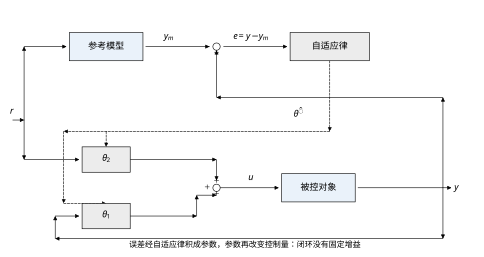
表 61-1 列出本章的仿真设置。所有数字都来自 code/ch061_sim.py 的一次运行，图与正文同源。
| 项目 | 取值 | 说明 |
|---|---|---|
| 对象参数 | a=1.0、b=1.4 | 标称值；参数突变实验把 b 改为 2.1 |
| 参考模型 | a_m=2.0、b_m=2.0 | 直流增益 1，时间常数 0.5 s |
| 理想参数 | \theta_1^*=-0.7143、\theta_2^*=+1.4286 | 由式 (61-5) 算出 |
| 采样周期 | T_s=0.01 s | 每拍 RK4 细分，自适应律用欧拉积分 |
| 参考输入 | 阶跃 1；方波幅值 1、周期 6 s；PRBS 序列 | PRBS 用于给辨识提供激励 |
| 自适应增益 | \gamma=0.5\sim800 | 主扫描变量，§61.6 给出稳定上界 |
| 执行器限幅 | 缺省不设；饱和实验设 \lvert u\rvert\le2 | 指令幅值取 5 以强制触发 |
本章的路线是这样铺的。§61.2 给出自适应律的两条推导路径（Lyapunov 与 MIT），并说明为什么前者能保证收敛、后者不能。§61.3 把它落成五步设计流程。§61.4 在连续域里把“参数已知”与“参数从零起步”两条曲线放在一起，让读者看清自适应到底补上了什么。§61.5 转到离散域，给出可以直接写进代码的递推式，并引出间接自适应（STR）这条与 MRAC 并列的技术路线。§61.6 用三组实验把“\gamma 能取多大”这个问题钉死：未建模动态给出硬上界，量测噪声给出软上界。§61.7 逐个解释 \gamma、\sigma、死区、遗忘因子这些旋钮各自在改什么。§61.8 给出可以照抄的调参顺序。§61.9 讲五副补丁的取舍与叠加顺序。§61.10 讲工程落地时最容易踩的三个坑：参数漂移、估计可信度、安全边界。§61.11 划出适用边界并指向 PID 与 MPC。
自适应控制能做的事情有一条明确的分界线，必须先说清楚。它处理的是参数化不确定性：对象的结构（阶次、控制量进入的位置、非线性的形状）是清楚的，只有若干个系数不知道。它处理不了非参数化不确定性：阶次错了、有没建模的谐振、有纯延迟、有死区——这些东西无法写进式 (61-4) 那种“两个参数”的形式里，只能靠 §61.6 的鲁棒化手段去压制，压不住就失稳。
本章全程假设式 (61-1) 的结构成立：一阶、控制量 u 以 b 的系数线性进入、输出 y 可直接量测。未知的只有 a 与 b 两个实数。这个假设看起来很苛刻，但它是所有自适应结论的地基——一旦结构错了，下面推出的“误差会收敛到零”就不再成立，只剩“误差有界”这一条较弱的结论。
设计的核心动作是把跟踪误差的导数整理成“一个稳定的线性系统 + 一个由参数误差驱动的项”。这一步做成了，剩下的就是选一个能让那个驱动项自己消失的律。
取控制律
u=\theta_1y+\theta_2r \tag{61-8}
记参数误差 \tilde\theta_i=\theta_i-\theta_i^*。代入对象 (61-1)，利用 a-b\theta_1^*=a_m 与 b\theta_2^*=b_m 两个恒等式（它们正是式 (61-4) 的改写），得到
\dot y=-\big(a-b\theta_1^*\big)y+b\tilde\theta_1y+b\theta_2r+d =-a_my+b\tilde\theta_1y+b\theta_2r+d \tag{61-9}
再减去参考模型 (61-2)：
\dot e=-a_me+b\tilde\theta_1y+b\tilde\theta_2r+d =-a_me+b\,\tilde\theta^{\mathsf T}\phi+d \tag{61-10}
其中回归向量
\phi=\begin{bmatrix}y\\ r\end{bmatrix},\qquad \tilde\theta=\begin{bmatrix}\tilde\theta_1\\ \tilde\theta_2\end{bmatrix} \tag{61-11}
这一步是全部推导的枢纽。式 (61-10) 说的是：参数误差不是通过它自己，而是通过“参数误差 × 回归向量”这个乘积影响跟踪误差的。y 大、r 大时，同样的参数偏差造成的误差也大；y=r=0 时，参数错得再离谱也不产生误差——这也解释了为什么“没有激励就没有辨识”。
还要注意 d 的位置。常值扰动 d 在式 (61-10) 里以一个常数偏置出现，它和 \tilde\theta_2r 的结构完全一样（都是不依赖 y 的常值项），所以自适应律会把它一并吸收进 \theta_2。这是 MRAC 相对“无积分”的固定增益控制的一个隐性优势：它自带一层对常值扰动的积分作用，只不过这个积分作用藏在参数里，而不是显式写着一个 1/s。
现在要选 \dot\theta。思路是构造一个同时含 e 和 \tilde\theta 的能量函数，然后挑 \dot\theta 让它的导数刚好把交叉项消掉、只剩一个负定项。
取
V=\frac12e^2+\frac{b}{2\gamma}\big\|\tilde\theta\big\|^2,\qquad \gamma>0 \tag{61-12}
求导并代入 (61-10)（先令 d=0）：
\dot V=-a_me^2+b\,e\,\tilde\theta^{\mathsf T}\phi+\frac{b}{\gamma}\tilde\theta^{\mathsf T}\dot\theta \tag{61-13}
后两项都含 \tilde\theta^{\mathsf T}，只要令
\dot\theta=-\gamma\,e\,\phi \tag{61-14}
它们就精确抵消，剩下
\dot V=-a_me^2\le0 \tag{61-15}
到这一步只证明了 V 不增，还没证明 e\to0——V 停在某个正值上、e 停在某个非零常数上，也满足 \dot V=0。补上这一步要用 Barbalat 引理：V 单调有界故收敛，\int_0^\infty a_me^2\,\mathrm dt=V(0)-V(\infty)<\infty 说明 e\in L_2；再由闭环有界性得 \dot e 有界，于是 e 一致连续；L_2 且一致连续的函数必趋于零，故
\lim_{t\to\infty}e(t)=0 \tag{61-16}
这就是 Lyapunov 律的全部价值：它给出的是一个无限时间上的收敛承诺，而不是“误差变小了”这种模糊说法。 代价是它对 \tilde\theta 什么都没说——式 (61-15) 只约束 e，不约束 \tilde\theta 是否收敛到 \theta^*。这与 §61.1.3 的观察完全一致：\hat\theta 的两个分量可以停在任意满足 \tilde\theta^{\mathsf T}\phi=0 的位置上。r 恒不为零时，\tilde\theta^{\mathsf T}\phi=0 只要求一个线性组合为零，解是一条直线而不是一个点。
式 (61-14) 写成标量形式更直观：
\dot\theta_1=-\gamma\,e\,y,\qquad \dot\theta_2=-\gamma\,e\,r \tag{61-17}
两个式子的形状完全一样：误差乘上对应的回归量，再乘一个增益，然后积分。这不是巧合，而是一类结构的通例——凡是“参数线性进入”的对象，Lyapunov 律都是这个形状，差别只在回归向量取什么。§61.5 的离散版本、以及更一般的 n 阶情形，都是照这个模子刻出来的。
在 Lyapunov 方法之前，工程界先用的是另一条路，叫 MIT 律（得名于 MIT 的 Instrumentation Laboratory）。它的出发点非常朴素：把跟踪误差的平方当作代价，沿负梯度方向调参数。
J(\theta)=\frac12e^2,\qquad \dot\theta=-\gamma\frac{\partial J}{\partial\theta}=-\gamma e\frac{\partial e}{\partial\theta} \tag{61-18}
问题卡在 \partial e/\partial\theta 上。由式 (61-10) 可知 \partial e/\partial\theta 不是一个常数，而是一个传递函数的输出：
\frac{\partial e}{\partial\theta}=\frac{b}{s+a_m}\phi \tag{61-19}
它依赖未知的 b，还得对 \phi 做滤波。工程上的近似是：把 b 吸收进 \gamma，用一个已知的一阶滤波器代替 1/(s+a_m)，得到
\dot e_f=-a_me_f+b_me,\qquad \dot\theta=-\gamma\,e_f\,\phi \tag{61-20}
e_f 叫灵敏度滤波信号。式 (61-20) 就是本章代码里 mode="mit" 那几行。
这个近似看上去无害，实际上把收敛性彻底弄丢了。式 (61-19) 里的 b 被换成了 b_m、滤波器被换成了另一个截止频率，两者的比值随工况变化；e_f 与真实的 \partial e/\partial\theta 之间差一个未知的、随参数漂移的因子。梯度方向一旦不准，积分就可能把参数推向错误的方向——而积分器推错了是不会自己回来的。
更麻烦的是，MIT 律的平衡点条件与 Lyapunov 律不同。Lyapunov 律要求 \tilde\theta^{\mathsf T}\phi=0，配合 e\to0 是一套自洽的结构；MIT 律要求 e_f\phi=0，e_f 里含有滤波器的动态，闭环在参数空间里的轨线不再是“朝着 \theta^* 单调靠近”，而可能绕着走、甚至走反。
图 61-2 把两条律放在同一张图上。为了公平，Lyapunov 律取 \gamma=2，MIT 律取一个能让它勉强不发散的增益 \gamma=0.2——再大就振荡到没法画。
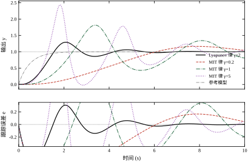
Lyapunov 律在 \gamma=2 下，调节时间 6.51 s、超调 28.97%、IAE 1.0243。MIT 律在它最好的增益 \gamma=0.2 下，调节时间 9.63 s、超调 10.96%、IAE 3.6756——慢了 48%，累计误差是 3.6 倍。
真正说明问题的是表 61-2 里那一列末端静差。它随 \gamma 变化，而且符号会翻：
| \gamma（MIT） | 超调 | 末端静差 | 备注 |
|---|---|---|---|
| 0.2 | 10.96% | -0.0504 | 10 s 内尚未收敛，误差仍在缓慢变化 |
| 0.5 | 38.57% | -0.0816 | 振荡加剧 |
| 1.0 | 121.12% | +0.1799 | 静差反号，控制量明显饱和 |
| 2.0 | 83.06% | — | 超调反而小于 \gamma=1，非单调 |
| 5.0 | 134.25% | — | \lvert u\rvert_{\max}=3.73，已接近执行器极限 |
表 61-2 里有两件事值得停一下。第一，静差从 -0.0504 变到 +0.1799，中间穿过零点——如果它只是“收敛得慢”，符号不该翻。第二，超调从 \gamma=1 的 121.12% 降到 \gamma=2 的 83.06%，再升到 \gamma=5 的 134.25%——增益加大并没有单调地变好或变坏，而是在震荡。这两条合起来说明：MIT 律在参数空间里走的是一条绕着目标转的螺旋，转得快不快、转几圈才停，取决于 \gamma 与当前对象参数的组合，而后者是未知的。
所以本章后续所有实验一律使用 Lyapunov 律。这不是偏好问题：MIT 律没有一个可以事先算出来的稳定域，而 Lyapunov 律的稳定域在 §61.6 可以被未建模动态与噪声两条线夹出来。
把式 (61-14) 与式 (61-20) 摆在一起看，可以得到一张“配方”：
\boxed{\;\dot\theta=\gamma\cdot(\text{误差信号})\cdot(\text{回归向量})+\text{修正项}\;} \tag{61-21}
三个成分各有分工。误差信号决定“往哪边调”：Lyapunov 律用 e，MIT 律用 e_f，后者不准。回归向量决定“哪个参数该为这个误差负责”：y 大就把账记到 \theta_1 头上，r 大就记到 \theta_2 头上。增益 \gamma 决定“调多快”，它同时决定了收敛速度与噪声敏感度，是全部调参工作的主战场。修正项是 §61.9 要加的鲁棒化手段：\sigma 修正、死区、投影、饱和冻结，全都是在式 (61-21) 后面跟一个“只在特定条件下才起作用的小尾巴”。
这条配方还暴露了一个结构性事实：自适应律是一个纯积分器。积分器没有自恢复能力，进入它的量一旦有偏（噪声、未建模动态、饱和期间的错误误差），偏差就会积累成漂移。§61.9 与 §61.10 的全部工程手段，本质上都是在给这个积分器装“泄放阀”。
式 (61-16) 只说了 e\to0，没说 \tilde\theta\to0。这个缺口不是证明技巧的问题，是信息量的问题。要让 \tilde\theta 收敛，需要回归向量满足持续激励（persistently exciting，PE）条件：存在 \alpha>0 与 T>0，使得对任意 t
\int_t^{t+T}\phi(\tau)\phi(\tau)^{\mathsf T}\,\mathrm d\tau\ \ge\ \alpha I
这个矩阵不等式的意思是：\phi 在每一个方向上都要有足够的能量。对本章的两参数系统，它要求 \phi=(y,r) 不能长期贴着一条直线。
阶跃指令恰好违反这个条件。稳态时 y\to r，\phi\to r(1,1)^{\mathsf T}，方向固定，积分矩阵的秩退化为 1，只能确定 \tilde\theta 在 (1,1) 方向上的投影——也就是 \theta_1+\theta_2 这一个组合。这与 §61.1.3 的式 (61-6) 完全一致：PE 条件失效的那一维，正好是那个“看不见的方向”。
反过来，只要指令在变，\phi 的方向就在转，PE 就可能成立。本章 \gamma=100 时两个分量都能贴到真值（表 61-5），靠的就是暂态过程中 y 从 0 升到 1、\phi 从 (0,1) 转到 (1,1) 的这段“扫弧”。但这是暂态，不是持续激励——一旦 y 稳定，弧就停了，之后学到的东西就定格在那里。所以 \gamma 越大、暂态越短，反而越“抓得住”那段弧，这也是高增益参数更准的另一个解释。
工程上想真正辨识参数，有两条路：一是让指令本身足够丰富（这也是注塑机、伺服调试时常用多段阶跃的原因）；二是人为叠加一个不影响主任务的小幅探测信号（dither）。第二条路的代价可以直接估出来：探测信号幅值是 \delta，跟踪误差的 rms 至少上升 \delta 量级。要辨识就得付精度，这是绕不过去的交换。
式 (61-12) 的 V 里，第二项的系数是 \frac{b}{2\gamma}，不是更自然的 \frac{1}{2\gamma}。这个 b 不是装饰，它是为了和交叉项配平。
回看式 (61-13)：交叉项是 b\,e\,\tilde\theta^{\mathsf T}\phi，而 \dot\theta 那项贡献的是 \frac{b}{\gamma}\tilde\theta^{\mathsf T}\dot\theta。要让后者的系数恰好抵消前者，\tilde\theta 前面的因子必须是 \frac{b}{\gamma}。如果写成 \frac{1}{2\gamma}，抵消不掉，只剩
\dot V=-a_me^2+(b-1)\,e\,\tilde\theta^{\mathsf T}\phi
这个式子既可能为正也可能为负，V 不再单调，证明断在这里。
这条细节说明两件事。第一，Lyapunov 证明是“配”出来的，不是“猜”出来的：先看交叉项长什么样，再反推权重。第二，b 未知这件事被巧妙地藏进了 V 里——V 本身不需要计算，只要存在就行，所以不知道 b 也不妨碍证明成立。这正是 Lyapunov 方法相对“直接算特征值”的高明之处。
同样的道理解释了为什么 §61.9 加了 \sigma 或死区之后，结论从“收敛”退化为“有界”。加 \sigma 后
\dot V=-a_me^2-\frac{\sigma b}{\gamma}\tilde\theta^{\mathsf T}(\theta-\theta_0)
第二项在 \theta 远离 \theta_0 时为负、靠近时为正，V 不再单调下降。能证明的只剩“V 最终进入某个球内”，这个球的半径与 \sigma 成正比——也就是 §61.7.4 里那个稳态误差。理论上失去的每一点，都会在实测数据里变成一个具体的数字。
前面所有推导都默认了一件事：b 的符号已知——对象对一个正的控制量给出正的响应。这个假设从来没有被写进公式，因为它一旦不成立，公式里的每一个符号都跟着反。
看误差方程 (61-10)：b 是以正系数的身份出现在 e\,\tilde\theta^{\mathsf T}\phi 里的。自适应律取 \dot\theta=-\gamma e\phi，靠的正是“-b\gamma 这部分为负”来保证 \dot V\le0。如果实际 b<0 而设计时按 b>0 取符号，这一项就变成正的，\dot V>0，\theta 朝错误方向单调加速，误差指数增长。实测的表现是：几十毫秒内 \theta 冲向硬限幅，y 反向飞走，控制量顶在限幅上不动。
为什么控制方向不能交给自适应律自己去学？ 因为符号是一个离散的二值量，不是连续参数。梯度法只能在连续空间里爬，遇到“符号”这种跳变，梯度信息本身就没有定义——b 穿过零点的瞬间，式 (61-30) 的分母为零，控制量无穷大。文献里有用 Nussbaum 增益处理这一点的做法，但那属于研究性内容，工程上不该依赖。
工程上的做法只有三条，都很朴素：
还要注意一种更麻烦的情况：符号会变。四象限运行的电机、双向液压回路、可逆泵，在不同工况下 b 的符号确实会翻转。这类对象不适合用单一 \theta 的自适应律，应当按工况分段，每一段用一套独立的参数——这实际上是把自适应退化成了增益调度（§61.11.6 会把这几种方法的边界划清楚）。
式 (61-15) 给出 \dot V\le-a_me^2\le0，很多人到这里就写“因此 e\to0”。这一步是错的，中间还差一个引理。
\dot V\le0 能推出的只是三件事：V 单调不增因而有下界、\int_0^\infty e^2\mathrm dt<\infty（即 e\in L_2）、e 有界。一个平方可积的函数完全可以不趋于零——例如一系列高度不变、宽度递减的窄脉冲，积分收敛，但函数值无穷多次回到 1。
从 e\in L_2 走到 e\to0，需要 Barbalat 引理：若 e 一致连续且 \int e^2<\infty，则 e\to0。而“一致连续”在这个问题里由“\dot e 有界”保证。于是全部重担落在
\dot e=-a_me+b\,\tilde\theta^{\mathsf T}\phi
的右端是否有界上。e 与 \tilde\theta 已经有界，剩下的关键是 \phi=(y,r)——y 有界，这一条不在 Lyapunov 证明的射程之内。
这就是自适应控制证明里那个经典的“循环”：要证 y 有界，需要闭环稳定；要证闭环稳定，需要参数有界；要证参数有界，需要 y 有界。标准教材的处理是假定参考模型与对象都“足够温和”，把这一环补上；而工程上的处理更直接——加硬限幅。
有了 \lvert\theta_i\rvert\le20，\theta 有界；有了执行器限幅，u 有界；于是 \dot y=-ay+bu+d 的右端有界，y 在有限时间内不会跑到无穷。三个限幅把证明里的那个洞堵上了。这也解释了为什么表 61-4 把“\theta 有硬限幅”列为必查项：它不是保守，它是让定理成立的前提之一。
顺便说清另一件事：Barbalat 给出的结论是“e\to0”，不含任何速率信息。它没说多快收敛，也没说 \theta 会怎样。这就是为什么本章的性能结论全部来自实测表格，而不是来自定理——定理只保证“最终会到”，工程关心的是“多久到、路上抖不抖”。
读完 §61.2.4 到 §61.2.5，一个自然的疑问是：既然 MIT 律这么不稳，为什么它在教材里出现得比 Lyapunov 律还早、篇幅还多？
原因有一半是历史，一半是教学。MIT 律在 1950 年代末就随飞行器自适应自动驾驶仪的研制出现了，比 Lyapunov 方法进入控制理论（1960 年代中后期）早了近十年。教材按时间线写，读者自然先遇到它。教学上它也确实“好讲”：只需要“误差平方沿负梯度下降”这一个概念，不需要构造 Lyapunov 函数，推导三行就完。相比之下，Lyapunov 律的推导是逆向的——先要有一个 V，再从 \dot V 反推出 \dot\theta，初学者第一次看会觉得“这个 V 是从天上掉下来的”（§61.2.8 已经解释了它是怎么“配”出来的）。
但“好讲”和“好用”是两件事。MIT 律在工程上被弃用，理由可以归结为三条，而这三条恰好都是无法通过调参补救的结构性缺陷：
还有一条更隐蔽的差别藏在校准里。MIT 律的等效增益含因子 b_m/b——设计时用 b_m 代替了真实的 b，一旦负载变化使 b 从 1.4 掉到 0.8，同一套 \gamma 的等效学习速率就变了近一倍，昨天调好的参数今天不再适用。Lyapunov 律没有这个问题：\gamma 直接就是学习速率，b 只出现在 V 的权重里，而 V 不需要被计算（§61.2.8）。
现场有一个很便宜的判别办法：把增益小步加倍，看静差怎么变。静差单调缩小，多半是 Lyapunov 型或带明确稳定域的律；静差先缩后翻号、超调时大时小，那这套控制器内部用的就是梯度型自适应。这个测试只需要两次阶跃，代价很低，但能省掉后面几天的瞎调。
因此本章把它放在“原理”这一节里讲，用途是当反例：MIT 律是“把局部线性化的直觉直接搬到非线性闭环上”的典型失败，而 Lyapunov 设计之所以值得多花那几行推导，正是因为它换来了一个可以被工程约束夹住的稳定域。
从式 (61-1) 到一套能上机的自适应控制器，中间要做五个决定。这五步的顺序不能乱：前一步的输出是后一步的输入，而且每一步都留下了一个“事后很难改”的约束。
参考模型不是在描述对象，而是在描述你希望闭环长什么样。它决定了三件事：稳态增益、响应快慢、以及“控制器需要多努力”。
本章取 a_m=b_m=2.0，直流增益 1、时间常数 0.5 s。这个选择不是随手写的：
一条经验：参考模型的时间常数取对象标称时间常数的 1/2 到 1/3；再快就要先确认执行器撑得住。
这一步决定了 \theta 有几个、回归向量是什么。做法是把“理想控制器”写成未知参数的线性组合，然后把这个组合原样当控制律。
一阶对象配一阶参考模型，得到式 (61-8) 的两参数形式。n 阶对象配同阶参考模型，标准结果是 2n 个参数：
u=\theta_1^{\mathsf T}\omega_1+\theta_2^{\mathsf T}\omega_2+\theta_3r \tag{61-22}
其中 \omega_1,\omega_2 是由 u 与 y 经 (n-1) 阶滤波器产生的状态。参数个数随阶次线性增长，这是 MRAC 的一个隐性成本：二阶对象要 5 个参数、三阶要 7 个，每个都要在线积分，每个都可能漂移。
参数化形式定下来之后，有两件事必须核一遍：
用式 (61-14) 的 Lyapunov 律，剩下两个选择：初值 \theta_0 和增益 \gamma。
初值有一个很实际的取舍。如果对象有标称参数，就把 \theta_0 设成标称值算出的 \theta^*；如果一点都不知道，就设零。两者的差别不小：本章实验 1 里，\theta_0 取真值时调节时间是 1.93 s、超调 0.00%、IAE 0.0014——这实际上就是“参数已知”的理想性能；而 \theta_0=0、\gamma=20 时（实验 2），调节时间 3.39 s、超调 7.34%、IAE 0.3027。初值给对，等于省掉了整个学习过程。
增益 \gamma 不能在这一步定死，它要等 §61.6 的两条边界算出来之后再选。这里先给一个可用的起点：取 \gamma 使得自适应回路的时间常数比内环慢 5 到 10 倍，即
\gamma\sim\frac{a_m}{5\,\|\phi\|_{\text{典型}}^2} \tag{61-23}
本章 \|\phi\| 的典型值在 1.5 量级，a_m=2，算出 \gamma 在 0.2 附近——这个值偏保守，实际可以往上走一到两个数量级，但要靠 §61.6 的实验确认。
到这一步控制器在纸面上是能收敛的，但一上机就会出问题。表 61-3 列出必须提前处理的三件事。
| 问题 | 现象 | 处理 | 本章位置 |
|---|---|---|---|
| 常值扰动 / 未建模偏置 | \theta 缓慢单向漂移 | \sigma 修正，加 -\sigma(\theta-\theta_0) | §61.9.1 |
| 量测噪声 | \theta 抖、控制量抖 | 死区，\lvert e\rvert\le\Delta 时冻结 | §61.9.2 |
| 执行器饱和 | 饱和期间误差不降，\theta 越推越大 | 饱和冻结或投影 | §61.9.3 |
这三条都不是“可选优化”，而是不加就会失效的必需品。本章实验 9 给了一个极端例子：指令幅值 5、限幅 2 时，自由自适应的 \|\theta\| 被推到 28.28（两个分量都顶到 20 的硬限），而饱和冻结只到 0.46——两者的 IAE 完全相同，都是 22.402。冻结没有损失任何跟踪性能，只是消掉了漂移。 这笔交易在任何情况下都该做。
设计完必须按三层跑一遍，每层失败对应不同的修改方向：
三层的顺序不能颠倒。跳过第一层直接调参，最常见的后果是把符号错误当成“增益没调好”，然后一路加大 \gamma 直到发散。
把上面五步压成表 61-4，可以逐项打勾：
| 检查项 | 判据 | 不通过的后果 |
|---|---|---|
| 参考模型阶次与对象一致 | 同阶或高一阶 | 误差方程 (61-10) 不成立，收敛性无保证 |
| 控制方向已知 | b 的符号确定 | 自适应往反方向推，必然发散 |
| \theta_0 有依据 | 标称值或 0，不是随手填 | 起始阶段大误差，可能触发饱和 |
| \gamma 有上界依据 | 做过未建模动态扫描 | 现场一有谐振就失稳 |
| \sigma 已设 | 有常值扰动时必须 | 参数缓慢漂到限幅 |
| 死区已设 | 噪声水平可测时必须 | 控制量持续抖动，磨损执行器 |
| 饱和处理已做 | 限幅值可知时必须 | 饱和期间参数卷绕 |
| \theta 有硬限幅 | 建议 \lvert\theta_i\rvert\le20 | 数值溢出，控制器彻底失效 |
最后一行不是形式主义。本章代码里专门设了 THETA_MAX=20.0 的硬限幅——在实验 9 的自由自适应分支里，正是这个限幅把 \theta 拦在了 20 而不是无穷大。没有它，那次仿真会直接跑出 nan。
抽象讲完，用本章的数字实际走一遍，看看五步各输出什么。
已知：对象一阶，标称 a=1.0、b=1.4，执行器限幅 3，量测噪声标准差 0.01，采样 0.01 s。
第一步：参考模型取 a_m=b_m=2.0（比对象快一倍，时间常数 0.5 s）。
第二步：控制律 u=\theta_1y+\theta_2r，两个参数。控制方向：b>0 已知（加大 u 使 y 上升）。
第三步：初值取标称值算出的 \theta_0=(-0.7143,+1.4286)；增益先按式 (61-23) 取 0.2，再按“往大走”的原则试到 5 与 20 各跑一遍。
第四步：限幅 3（是标称峰值 1.43 的 2.1 倍，满足“两倍余量”）；死区 \Delta=0.02（噪声的 2 倍，小于允许静差 2%）；\sigma=0（没有慢漂移迹象）；\lvert\theta_i\rvert\le20；饱和冻结打开。
第五步：三层验证，结果按 §61.6 的格式逐层记录。
把这些填进一张卡，就得到了可以直接交给软件工程师的东西：
| 条目 | 取值 | 依据 |
|---|---|---|
| 控制律 | u=\theta_1y+\theta_2r | 一阶对象 + 一阶参考模型 |
| 参考模型 | a_m=b_m=2.0 | 对象带宽的 2 倍 |
| 自适应律 | \dot\theta=-\gamma e\phi | Lyapunov（不用 MIT） |
| \theta_0 | (-0.7143,+1.4286) | 标称参数代入式 (61-5) |
| \gamma | 5 起，扫到 50 | 式 (61-23) 给保守起点，实测定上界 |
| 死区 \Delta | 0.02 | 噪声 0.01 的 2 倍 |
| \sigma | 0 | 无慢漂移 |
| 限幅 | 3 | 标称峰值的 2.1 倍 |
| 冻结 | 开 | 有执行器限幅 |
| 硬限 | \lvert\theta_i\rvert\le20 | 数值兜底 |
这张卡的价值在于：它把“设计”这件事固化成了十个可以逐项核对的格子，而不是散落在推导里的十个决定。换一个对象，改动的是格子里的数值，不是推导过程。
设计卡的第一行是参考模型，而参考模型往往凭直觉取“比对象快一倍”。这一步其实可以算，而且应该算——因为 a_m 与 b_m 的上限由执行器余量决定，不由愿望决定。
先看速度。一阶参考模型的阶跃响应是 y_m=r(1-e^{-a_mt})，进入 2% 带的时间约
t_s\approx\frac{4}{a_m}
a_m=2.0 给出 2.0 s，与实验 1 实测的 1.93 s 吻合（实测略快，因为 r 到 y_m 的传递还带一个零点效应）。如果指标要求 t_s\le3 s，那么 a_m\ge1.33 就够；要求 t_s\le1 s，则 a_m\ge4。
再看控制量。把 \theta^* 代回控制律，t=0 时 y=0、r=1，得
u(0)=\theta_2^*=\frac{b_m}{b}
控制量的起始峰值只由 b_m/b 决定，与 a_m 无关。 但如果按“直流增益为 1”的习惯取 b_m=a_m（本章就是 a_m=b_m=2.0），两者就耦合起来了：a_m 每提高一倍，u(0) 也提高一倍。
把这两条放在一起，就得到一个很实用的反推步骤：
本章 a_m=b_m=2.0、b=1.4，u(0)=1.43，执行器限幅 3——占比 48%，正好卡在第 3 条的红线上。这不是巧合，是设计时按这条规则定的。反过来，如果把 t_s 指标压到 1 s，a_m=b_m=4，u(0) 变成 2.86，占比 95%，任何一个参数偏差都会把控制量顶到限幅，接着就是 §61.9.3 的卷绕。
所以“参考模型取多快”这个问题的答案不是“越快越好”，而是“执行器给得起多快”。 这一条在 §61.7.6 还会从 a_m、b_m 各自的作用再讲一遍。
本章用一阶对象把原理讲清楚，但现场的对象十个里有八个是二阶以上。改成二阶不需要重新推导，只需要把三处地方按同一套逻辑扩写。
第一，控制律的参数个数从 2 变成 4。 二阶对象
\ddot y=-a_1\dot y-a_0y+bu
的匹配控制器需要 u=\theta_1y+\theta_2\dot y+\theta_3r+\theta_4\dot r 四个参数——回归向量里出现状态和指令的导数。这就是“参数化”的一般形式：对象每多一阶，回归向量就多一个状态分量、控制律就多一个参数；再按相对阶补上指令的导数，相对阶每多一阶就再多一个。
第二，导数怎么拿。 这是二阶以上真正的难点：\dot y 通常测不到。三条路：直接差分（放大噪声，配合低通滤波）、状态观测器（需要模型，与自适应重复）、或者把控制律改写成“用滤波后的信号”的形式（把微分算子搬进已知的滤波器里）。工程上最常用的是第三条，代价是引入一个额外的时间常数，它又成了 §61.6.3 意义上的未建模动态。
第三，\gamma 的上界会明显收紧。 参数从 2 个变 4 个，\|\theta^*\| 变大，步长约束 \gamma T_s\|\phi\|e\ll\|\theta^*\| 反而放松；但同时回归向量里多了 \dot y 与 \dot r，它们的幅值是原来的一阶导数量级，\|\phi\| 变大，于是又收紧。两者大致抵消，实测的经验是二阶对象的可用 \gamma 比一阶低 2 到 5 倍，具体只能靠 §61.6 的扫描确定。
还有一个容易被忽略的连带影响：\theta 从二维变四维，“只有组合被误差看见”这件事更严重。二维时误差只确定一个线性组合（\theta_1+\theta_2=1/b），四维时误差确定的是一个二维子空间里的投影，剩下两个自由度完全不可见。这就是为什么二阶以上的 MRAC 几乎从不用于参数辨识，而只用于跟踪。
式 (61-17) 是连续时间的微分方程，但所有实现都在采样系统上。本章的处理方式是：对象用 RK4 按 T_s=0.01 s 积分，自适应律用前向欧拉按同一节拍积分。
\theta[k+1]=\theta[k]-\gamma\,T_s\,e[k]\,\phi[k] \tag{61-24}
这个组合是工程上的常态——对象动态快，用高精度积分；参数动态慢，欧拉就够了。误差主要来自欧拉法，量级是 O(\gamma T_s^2)：T_s=0.01、\gamma=100 时约 10^{-2}，与量测噪声相比可以忽略。但如果把 T_s 放大到 0.1 s，\gamma=100 的欧拉积分就会明显偏离连续解，甚至失稳——这是 §61.5 要单独处理的问题。
仿真里还有一处细节值得说：执行器建模成“理想直通”还是“一阶滞后”，会改变结论。本节全部结果都假设理想执行器；§61.6 会把它换成一阶滞后 \tau_a=0.05 s，那时 \gamma 的可用上界会塌下来一大截。
图 61-3 上有三条曲线：参考模型的输出 y_m、参数已知（\theta_0=\theta^*）的控制器输出、以及参数从零起步（\theta_0=0、\gamma=10）的自适应输出。
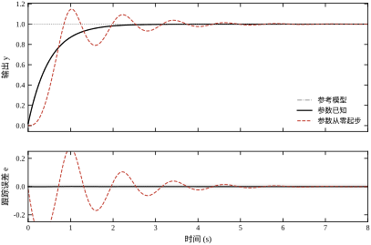
参考模型本身是一条 1-e^{-2t} 的指数曲线，在 t=1.96 s 进入 \pm2\% 带。两段对比很干净：
这 300 倍不是“学得慢”这么简单。参数从零起步时，控制器在最开始的 0.5 s 里几乎不输出（\theta\approx0，u\approx0），对象基本处于自由衰减状态，y 停在 0 附近；这段“什么都不做”的时间把 IAE 一次性抬了起来。自适应控制的误差，很大一部分花在“还没学会”的那一段上。 这也解释了为什么 §61.3 强调“初值给对，等于省掉整个学习过程”。
图 61-4 是三条 \gamma 下的参数轨迹。这张图是本章最反直觉的一张。
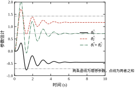
表 61-5 是三组 \gamma 在 t=10 s 的终值。
| \gamma | \hat\theta_1 | \hat\theta_2 | 两者之和 | 与理想和之差 |
|---|---|---|---|---|
| 2 | -0.142 | +0.860 | +0.718 | +0.004 |
| 20 | -0.567 | +1.281 | +0.715 | +0.001 |
| 100 | -0.722 | +1.436 | +0.714 | 0.000 |
| 理想值 | -0.7143 | +1.4286 | +0.7143 | — |
看三列的分工。“和”这一列在三组里都锁在 0.714 到 0.718 之间，误差不超过 0.6%，与式 (61-6) 的预测一字不差。而两个分量列差别巨大：\gamma=2 时 \hat\theta_2 只到 0.860，离真值差 40%。
为什么低增益会把分量停在半路？原因在回归向量的方向。起始瞬间 y=0，\phi=(0,r) 只有一个方向；随着 y 升起来，\phi 慢慢转到 (1,1) 方向。\phi 在参数空间里扫过一段弧，而 \theta 只能沿着当下的 \phi 方向移动。 \gamma 小，\theta 移动得慢，追不上这段弧的转动，最后停在弧上的某个位置；\gamma 大，\theta 几乎与 \phi 同步，落点就贴近 \theta^*。表 61-5 里 \gamma 从 2 加到 100，\hat\theta_1 从 -0.142 走到 -0.722、\hat\theta_2 从 0.860 走到 1.436，就是这么一点点“追上弧线”的过程。
这张表还给了个实用结论：想从 MRAC 里读出参数，就得把 \gamma 加到接近稳定边界——而那时控制量的抖动已经不可接受（\gamma=100 的 TV 是 19.9，是标称的 28 倍）。这就是 §61.10 反复强调“不要把自适应增益当参数估计”的量化依据：不是理论上不能，而是要它准就得付出你付不起的抖动代价。
表 61-6 把三组控制量指标摆在一起：
| 工况 | \lvert u\rvert_{\max} | TV | 稳态 u |
|---|---|---|---|
| 参数已知 | 1.43 | 0.7 | 0.714 |
| \gamma=20，从零起步 | 2.16 | 9.8 | 0.714 |
| \gamma=100，从零起步 | 2.48 | 19.9 | 0.714 |
最后一列完全相同，这不是巧合。稳态时 y=r=1、\dot y=0，由对象方程得
u_{ss}=\frac{ay_{ss}}{b}=\frac{1.0}{1.4}=0.714 \tag{61-25}
这个值与 \theta 怎么分解无关，只与 a/b 有关。换句话说，只要跟踪误差为零，控制量的稳态值就被对象唯一确定了；自适应改变的是到达它的路径，不是终点。
真正被改变的是路径上的抖动。参数已知时 TV 只有 0.7——控制量单调地爬到 0.714 就停了；\gamma=100 时 TV 是 19.9，意味着控制量在 0.714 附近来回摆的总幅度接近其稳态值的 28 倍。这个抖动不会体现在跟踪误差上（误差仍然收敛到零），但会体现在执行器的磨损、发热、噪声上。§61.6 会把它与噪声、未建模动态放在一起，给出 \gamma 的完整取值窗口。
前面所有推导都默认了一件事——参考模型的相对阶与对象相同。这条假设不写在公式里，却决定了整个方法能不能用。
相对阶的定义是“分母阶数减分子阶数”。本章对象是 \frac{b}{s+a}，相对阶 1；参考模型 \frac{b_m}{s+a_m}，相对阶也是 1。两者相同，所以理想控制器 (61-4) 只用到 y 与 r 的当前值，不需要它们的导数。
如果参考模型取成相对阶 0 会怎样？比如直接要求 y_m=r。代入式 (61-3) 解出 u=(ay-\dot r)/b——出现了 \dot r。指令的导数在数字系统里要么不可得，要么被噪声放大到不可用，这个控制律在物理上实现不了。
一般结论是：参考模型的相对阶不能小于对象的相对阶。小于就要对指令求导，大于则闭环里会多出对象本身抵消不掉的动态。工程上最稳的做法是取相等。
这条约束在换对象时会立刻咬人。二阶对象（相对阶 2）配一个一阶参考模型（相对阶 1），理想控制器不存在，硬套的后果是参数始终无法收敛、误差停在某个非零值上。此时要么把参考模型改成二阶，要么先给对象加一个前置滤波器把相对阶降下来——两条路都要改结构，不是调 \gamma 能救的。
图 61-3 这样的曲线，训练有素的眼睛只看四个位置，每个位置对应一个参数：
四个位置对应四个参数，互不干扰——这是“读图定位问题”的实用价值。初学者常犯的错是看到任何异常都去调 \gamma，而图上一半的异常根本不在 \gamma 的管辖范围内。
把 \theta_0=0、\gamma=20 的开头七个采样点逐个打印出来，能看到一个很不直观的事实：自适应在最该起作用的时候几乎不起作用。
| k | t (s) | y_m | y | e=y-y_m | \hat\theta_2 | u |
|---|---|---|---|---|---|---|
| 1 | 0.01 | 0.0396 | 0.000056 | -0.0395 | 0.0040 | 0.0040 |
| 2 | 0.02 | 0.0588 | 0.000221 | -0.0586 | 0.0119 | 0.0119 |
| 3 | 0.03 | 0.0776 | 0.000548 | -0.0771 | 0.0236 | 0.0236 |
| 5 | 0.05 | 0.1142 | 0.001884 | -0.1123 | 0.0580 | 0.0580 |
| 7 | 0.07 | 0.1492 | 0.004437 | -0.1448 | 0.1063 | 0.1063 |
三件事值得注意。
第一，k=0 那一拍什么都没发生。 控制器看到 y=0、y_m=0，误差为零，更新量为零，u=0。要等参考模型先动起来，误差才出现——误差是参考模型“喂”给自适应律的，没有参考模型就没有学习信号。
第二，\hat\theta_1 前七拍几乎一直是零（0.00015），而 \hat\theta_2 已经涨到 0.106。原因是回归向量的两个分量处境完全不同：\phi_1=y 还趴在 10^{-3} 量级，\phi_2=r 从第一拍起就是 1。所以“学得动”的那一半先动，“学不动”的那一半要等 y 长起来。这个不对称在 §61.4.3 讲参数轨迹时会以另一种形式再出现。
第三，\hat\theta_2 的增长可以用一条极简的式子概括。 起始段 y\approx0、e\approx-y_m、y_m\approx b_mrt=a_m t，于是
\hat\theta_2(t)\approx\gamma\int_0^t a_m\tau\,\mathrm d\tau=\gamma a_m\frac{t^2}{2}\approx\gamma t^2
代入 t=0.07、\gamma=20：20\times0.0049=0.098，实测 0.106，差 8%。参数是随时间平方增长的，不是线性增长——这意味着起始阶段的自适应能力比直觉的更弱。\gamma=20 时，要让 \hat\theta_2 从 0 爬到目标 1.43，按这条式子需要 t=\sqrt{1.43/20}=0.27 s；而那时 y_m=2t 已经到 0.53，误差已经积累起来了。这就是 §61.6.2 里“低增益超调大是学得太晚”的数学来源。
真实控制器跑在定时中断里，每隔 T_s 读一次 y、算一次 u、写到执行器。上一节把连续律直接欧拉化是一种做法，但更彻底的做法是从一开始就在离散域建模，这能避免“连续设计、离散实现”之间的口径差。
对式 (61-1) 做零阶保持离散化（d=0）：
y[k+1]=a_dy[k]+b_du[k],\qquad a_d=e^{-aT_s},\quad b_d=\frac{b}{a}\big(1-e^{-aT_s}\big) \tag{61-26}
代入 a=1.0、b=1.4、T_s=0.01：
a_d=e^{-0.01}=0.990050,\qquad b_d=1.4\times(1-e^{-0.01})=0.013930 \tag{61-27}
这两个数在整章会被反复用到，值得记在心里。a_d 离 1 只有 0.01——一阶对象的时间常数 1 s，采样 0.01 s，极点几乎贴着单位圆；b_d 只有 0.0139，是“一个采样周期内控制量能推动多少”的度量。
参考模型同样离散化，但它不是从对象来的，所以可以直接写成“一阶低通”：
y_m[k+1]=a_{m,d}y_m[k]+(1-a_{m,d})r[k],\qquad a_{m,d}=e^{-2.0\times0.01}=0.980199 \tag{61-28}
这里 1-a_{m,d}=0.019801 是刻意配成“直流增益恰为 1”的形式：令 r 为常数、y_m 稳定，得 y_m=(1-a_{m,d})r/(1-a_{m,d})=r。这个配法在离散设计里应该成为习惯——参考模型的增益不要靠调系数凑，要用 1-a_{m,d} 显式归一。
离散域有一个连续域没有的好处：极点配置可以写成一行闭式解。要求闭环按参考模型走，即 y[k+1]=a_{m,d}y[k]+(1-a_{m,d})r[k]，与式 (61-26) 联立：
b_du[k]=(a_{m,d}-a_d)y[k]+(1-a_{m,d})r[k] \tag{61-29}
于是
u[k]=\frac{(a_{m,d}-a_d)y[k]+(1-a_{m,d})r[k]}{b_d} \tag{61-30}
代入数值，a_{m,d}-a_d=-0.009851，1-a_{m,d}=0.019801，b_d=0.013930：
u[k]=-0.7072\,y[k]+1.4215\,r[k] \tag{61-31}
把它和连续域的式 (61-5) 比一下：\theta_1^*=-0.7143 对 -0.7072、\theta_2^*=+1.4286 对 +1.4215。两套参数只差 1%，因为 T_s=0.01 足够小。这 1% 正好是“用连续参数直接写离散代码”会引入的误差——在多数场合可以接受，但在死区、限幅、高速采样这类边界条件敏感的场合，最好还是按式 (61-30) 重新算一遍。
式 (61-30) 还有一个隐含要求：\hat b_d 不能为零，而且不能太小。本章代码把 \hat b 的下限卡在 bmin=0.002——不是因为 0.002 有什么物理意义，而是因为除法一旦逼近零，控制量会瞬间冲到天文数字，把整个自适应回路带崩。这个下限的取值要小于“最坏工况下 b_d 的 1/2”，本章真值是 0.0139，取 0.002 留了 7 倍余量。
把连续律 (61-24) 原样用，得到的离散 MRAC 是
u[k]=\theta[k]^{\mathsf T}\phi[k],\qquad \theta[k+1]=\theta[k]-\gamma\,T_s\,e[k]\,\phi[k] \tag{61-32}
它和连续版的唯一区别是把 \mathrm dt 换成了 T_s。这个替换看着无害，实际上把 \gamma 的物理意义改了：连续域里 \gamma 的单位是“每单位误差每单位时间”，离散域里真正起作用的是乘积 \gamma T_s——这是一个无量纲的步长。
步长有硬约束。参数一步的移动量是 \gamma T_se\|\phi\|，它必须远小于参数本身的量级，否则“调节”就变成了“跳跃”，闭环会在两个极端之间来回弹。本章 \|\theta^*\|=1.60、\|\phi\| 的典型值 1.4、e 的峰值约 1，于是约束写作
\gamma T_s\cdot 1.4\ll 1.6 \quad\Longrightarrow\quad \gamma\ll 114 \tag{61-33}
这与实测对得上：理想执行器下本章扫到 \gamma=100 仍然收敛（表 61-5 里 \hat\theta 已经贴住真值），但控制量 TV 已经涨到 19.9；再往上，\gamma T_s 的量级就逼近参数本身，测试中很快出现持续振荡。§61.6 会把这个上界进一步收紧——执行器只要带上 0.05 s 的滞后，\gamma 越过 150 附近就会失稳。
还有一处离散特有的问题：一拍延迟。式 (61-32) 计算 u[k] 用的是 y[k]，而 y[k] 要等第 k 个周期采样完成才拿得到；从采样到执行器更新之间存在一拍延时，等效于在回路里串了一个 z^{-1}。它对相位裕度的侵蚀是 -\omega T_s 弧度，在 T_s=0.01、带宽 2 rad/s 时约 0.02 rad，可以忽略；但如果 T_s 提到 0.1 s，这一项就是 0.2 rad，再叠加执行器滞后，10^\circ 的裕度就没了。这是“采样周期不能随便放大”的定量理由。
那 T_s 到底取多少？ 实验 11 把 T_s 从 0.001 s 扫到 0.1 s，每次都按式 (61-30) 重算理想参数，得到一组很干净的对照：T_s=0.001 s 时 \theta^*=(-0.7136,+1.4279)，相对连续值偏离 0.06%；0.005 s 偏离 0.32%；0.01 s 偏离 0.63%；0.02 s 偏离 1.25%；0.05 s 偏离 3.08%；0.1 s 偏离 6.02%。偏离大致与 T_s 成正比，因为 b_d 的一阶近似是 bT_s，而 1-a_{m,d}\approx a_mT_s，两个一阶项相除，误差退到二阶以上。
同时 b_d 本身在剧烈变化：0.0014、0.00698、0.0139、0.0277、0.0683、0.1332。这个数不能太小。本章量测噪声标准差 0.01，STR 用 \hat b_d 做除数时，等效到控制量上的噪声量级是 0.01/\hat b_d——T_s=0.001 时这个比值是 7，比控制量本身还大；T_s=0.01 时是 0.72，可以接受。这是“采样不能一味求快”的原因：采样越快，单拍的增量信息越少，增益反算把噪声放得越大。
步长上界则在另一个方向上与 T_s 拉扯。把式 (61-33) 里的 T_s 单独提出来：\gamma\ll\|\theta^*\|/(\|\phi\|T_s)\approx1.14/T_s。于是 T_s=0.001 时上界约 1141，0.01 时 114，0.05 时 22.8，0.1 时 11.4。采样周期每缩小十倍，允许的 \gamma 上界放宽十倍。
三条约束合起来的结论是：T_s 有一个不宽的最优带，大约在“对象时间常数的 1% 到 5%”之间。本章对象时间常数 1 s，即 0.01 到 0.05 s；取 0.01 s 是因为参考模型的时间常数只有 0.5 s，控制回路要按更快的那个定节拍。采样周期是跟着参考模型定的，不是跟着对象定的——这一点在做自适应设计时经常被忽略，因为大家习惯按对象带宽选采样率。
前面所有内容属于直接自适应：不估对象参数，直接调控制器参数 \theta。还有一条并列的路线叫间接自适应（self-tuning regulator，STR）：先在线辨识对象参数 (\hat a_d,\hat b_d)，再按“参数已知”的公式 (61-30) 算控制量。
\underbrace{(\hat a_d,\hat b_d)}_{\text{RLS 辨识}} \;\longrightarrow\; \underbrace{u[k]=\frac{(a_{m,d}-\hat a_d)y[k]+(1-a_{m,d})r[k]}{\hat b_d}}_{\text{极点配置}} \tag{61-34}
辨识用递推最小二乘（RLS）。把式 (61-26) 写成回归形式 y[k]=\varphi[k-1]^{\mathsf T}\vartheta，其中 \varphi=[y[k-1],u[k-1]]^{\mathsf T}、\vartheta=[a_d,b_d]^{\mathsf T}，RLS 的递推是
\begin{aligned} K[k]&=\frac{P[k-1]\varphi[k]}{\lambda+\varphi[k]^{\mathsf T}P[k-1]\varphi[k]}\\ \hat\vartheta[k]&=\hat\vartheta[k-1]+K[k]\big(y[k]-\varphi[k]^{\mathsf T}\hat\vartheta[k-1]\big)\\ P[k]&=\frac{1}{\lambda}\Big(P[k-1]-K[k]\varphi[k]^{\mathsf T}P[k-1]\Big) \end{aligned} \tag{61-35}
\lambda\in(0,1] 是遗忘因子。\lambda=1 表示“所有历史数据等权重”，\lambda<1 表示“越近的数据权重越大”。这一行参数就是 STR 的全部调参空间——它同时管着“跟得上参数变化”和“抗得住噪声”这两件互相矛盾的事。
STR 与 MRAC 的差别不只是实现路径，而是信息的用法：
| 维度 | 直接自适应（MRAC） | 间接自适应（STR） |
|---|---|---|
| 在线估计什么 | 控制器参数 \theta | 对象参数 (\hat a_d,\hat b_d) |
| 需要多少先验 | 控制方向、阶次 | 阶次、参数大致范围 |
| 参数可解释性 | 差（只对组合敏感） | 好（估的就是物理参数） |
| 对激励的要求 | 低（误差本身即驱动） | 高（无激励则 P 不更新） |
| 计算量 | 每拍 O(n) | 每拍 O(n^2)（矩阵递推） |
| 典型失效 | 参数漂移、饱和卷绕 | 激励不足导致 \hat b\to0 |
“参数可解释性”这一行是 STR 在工程上更受欢迎的主要原因：现场工程师愿意看到“\hat b_d 从 0.0139 变到 0.0209”这种话，而不愿意看到“\theta_2 从 1.15 变到 1.06”。§61.10 会说明这个差别在故障诊断上值多少钱。
STR 的表现高度依赖激励。用阶跃或方波做指令时，回归矩阵只有两个电平，\varphi 在各拍之间共线，RLS 分不开 \hat a_d 与 \hat b_d——实测中 \hat b_d 会一直贴着初值不动。本章改用伪随机序列（PRBS）：每一拍从 \{+1,+0.6,-1,-0.6\} 四个电平里取一个，八个拍为一个循环，保证 \varphi 的方向足够丰富。
图 61-5 是 \lambda 取 1.00、0.98、0.95 三档时 \hat b_d 的轨迹。b 在 t=5 s 从 1.4 跳到 2.1，b_d 的真值相应从 0.01393 跳到 0.02090。
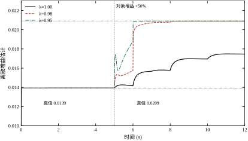
表 61-7 是全部四档的汇总。
| \lambda | \hat a_d | \hat b_d（跳变前） | \hat b_d（跳变后） | \max\lvert e\rvert | IAE |
|---|---|---|---|---|---|
| 1.00 | 0.9902 | 0.0139 | 0.0174 | 0.1625 | 0.7224 |
| 0.98 | 0.9900 | 0.0139 | 0.0209 | 0.0582 | 0.0705 |
| 0.95 | 0.9900 | 0.0139 | 0.0209 | 0.0365 | 0.0455 |
| 0.90 | 0.9900 | 0.0139 | 0.0209 | 0.0279 | 0.0478 |
| 真值 | 0.9901 | 0.01393 | 0.02090 | — | — |
先说好消息：\lambda\le0.98 的三档在跳变后全部精确收敛到 0.0209，与真值 0.02090 在四位有效数字上重合。这说明“辨识器 + 极点配置”这条链路在有激励的条件下是可靠的，比 MRAC 那种“只对组合敏感”的行为干净得多。
再说 \lambda=1 那一行。它在跳变前估得完全正确（0.0139），跳变后只走到 0.0174 就停了——差真值 17%。原因不是算法错，而是 \lambda=1 的 RLS 会把 P 矩阵越压越小，增益随时间衰减到零，本质上变成了一个“只信早期数据”的估计器。参数变了，它还在用旧账。
那为什么不干脆取 \lambda=0.90？看表 61-8——同一组 \lambda 在量测噪声 0.01 下的表现。
| \lambda | \hat b_d 终值 | \hat b_d 尾段标准差 | \max\lvert e\rvert |
|---|---|---|---|
| 1.00 | 0.0143 | 0.00002 | 0.0584 |
| 0.98 | 0.0148 | 0.00055 | 0.0896 |
| 0.95 | 0.0229 | 0.01004 | 0.1669 |
| 0.90 | 0.1150 | 0.16683 | 0.6003 |
这张表把代价摊开了。\lambda=1 的估计几乎不抖（标准差 2\times10^{-5}），但完全跟不上变化；\lambda=0.98 的抖动是 5.5\times10^{-4}，还在真值的 4% 以内；到 \lambda=0.95 抖动涨到 1.0\times10^{-2}，已经与真值同量级，\hat b_d 被噪声推着乱跑，跟踪误差跟着涨到 0.1669；\lambda=0.90 彻底失控——\hat b_d 均值 0.1150，是真值的 8 倍，标准差 0.16683 比均值还大。
所以遗忘因子是一个“跟踪速度 vs 估计方差”的连续旋钮，没有一个放之四海的取值。 本章的可用区间是 \lambda\in[0.95,0.98]：0.98 偏保守、噪声下最稳；0.95 偏激进、参数变化快时才用。再往下不是“更快”，而是“更快地跑偏”。
两条路线没有绝对优劣，选择取决于三件事：
本章后续的实验全部基于 MRAC，原因是它更简单、更容易把“自适应”这件事本身讲清楚；STR 的完整行为已在表 61-7 与表 61-8 里给出，不再重复。
表 61-7 里 \lambda=1 的那一行“跳变后停在 0.0174”，根因不在算法而在协方差矩阵。把 \mathrm{tr}(P) 逐拍记下来就很清楚：
| \lambda | 0.1 s | 1 s | 3 s | 5 s | 8 s | 11.9 s |
|---|---|---|---|---|---|---|
| 1.00 | 20.57 | 0.116 | 0.018 | 0.012 | 0.007 | 0.004 |
| 0.98 | 23.11 | 0.414 | 0.145 | 0.238 | 0.378 | 0.301 |
| 0.95 | 27.59 | 3.041 | 1.129 | 2.043 | 7.507 | 15.81 |
P 是参数估计的逆协方差，\mathrm{tr}(P) 可以理解为“这个估计器有多愿意改主意”。初值 P_0=100I，\mathrm{tr}=200，意思是“对初值几乎完全不信”；随着数据进来，它迅速下降。
\lambda=1 时它从 20.6 一路掉到 0.004，降了五千倍——到 10 s 时新来的一个样本对 \hat\vartheta 的影响只有开头的五千分之一，估计器实质上已经关闭了学习通道。所以 b 跳变后 \hat b_d 只走到 0.0174 就停住：不是它算错了，是它已经不听新数据了。
\lambda=0.98 时 \mathrm{tr}(P) 稳在 0.3 到 0.4 之间，既不衰减到零也不发散——这正是“长期在线”需要的状态，也是它在表 61-7 里能精确跟上跳变的原因。
\lambda=0.95 时它反而涨到 15.81。注意这次仿真没有加噪声，涨的原因是激励不够丰富：PRBS 循环使用同一组八个电平，某些方向上长期没有新信息，遗忘因子却在不断“忘掉”旧信息，于是那些方向上的方差越积越大。再叠加噪声，就是表 61-8 里 0.16683 的标准差。
由此得到两条实用的数值处理：
自适应控制只有一个主旋钮——\gamma。这一节把它的“可用窗口”用四组实验量出来：窗口的下沿由收敛速度决定，上沿由未建模动态决定，窗口内部还要按噪声再削一刀。
先说清楚 \gamma 调错会往哪边坏：
三个方向不是独立的，而是同一条曲线上的三段。图 61-6 把 \gamma 从 0.5 扫到 100，纵轴分别是调节时间、IAE 与控制量总变差。
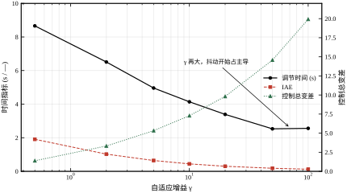
表 61-9 是全部七档的原始数据，全部 \theta_0=0。
| \gamma | t_s (s) | 超调 | IAE | \lvert u\rvert_{\max} | TV | 参数距真值 |
|---|---|---|---|---|---|---|
| 0.5 | 8.66 | 16.49% | 1.9081 | 0.96 | 1.4 | 1.109 |
| 2 | 6.51 | 28.97% | 1.0243 | 1.42 | 3.3 | 0.807 |
| 5 | 4.96 | 24.28% | 0.6448 | 1.75 | 5.3 | 0.552 |
| 10 | 4.14 | 14.82% | 0.4435 | 1.97 | 7.3 | 0.367 |
| 20 | 3.39 | 7.34% | 0.3027 | 2.16 | 9.8 | 0.209 |
| 50 | 2.53 | 2.60% | 0.1832 | 2.36 | 14.6 | 0.058 |
| 100 | 2.56 | 1.18% | 0.1265 | 2.48 | 19.9 | 0.011 |
这张表有四条趋势，每条都值得单独说一句。
调节时间先降后平。从 \gamma=0.5 到 50，t_s 从 8.66 s 降到 2.53 s，降了 3.4 倍；但从 50 到 100，t_s 反而微升到 2.56 s。拐点出现在 50 附近，此时 t_s 已经逼近参考模型自身的 1.96 s——再大的 \gamma 也快不过参考模型，因为参考模型是目标，不是限制之外的自由度。这是“自适应只能逼近理想控制器”这句话的第一个量化证据。
超调单调下降，从 16.49% 一路降到 1.18%。这条趋势容易误读成“增益越大越稳”，其实恰好相反：低 \gamma 时超调大，是因为控制器长时间用零参数（u\approx0）运行，y 落后于 y_m 越积越多，等参数终于学上来时冲过头。低增益的超调是“学得太晚”造成的，不是“回路太猛”造成的。
IAE 单调下降，从 1.9081 降到 0.1265，降了 15 倍。这条与直觉一致：学得快，累计误差就小。
TV 单调上升，从 1.4 涨到 19.9，涨了 14 倍。这条是全部代价所在。注意它涨得比 IAE 降得还快——IAE 降 15 倍的同时 TV 涨 14 倍，这两条曲线在 \gamma 大约 10 到 20 之间交叉，这就是“性价比最高”的工作点。
还有一列“参数距真值”值得留意：\gamma=0.5 时是 1.109（比 \|\theta^*\|=1.60 只小一点，说明几乎没学），\gamma=100 时是 0.011（已经贴住真值）。这与 §61.4.3 的观察一致，但这里的判据是到真值的欧氏距离，比“和”更严格——\gamma=50 时距离 0.058，虽然两个分量还没完全对齐，但已经进到 4% 以内。
上面的表是在理想执行器下测的。真实执行器有滞后，常见的是伺服阀、变频器、液压缸，时间常数几十毫秒。本章用一个一阶滞后 \tau_a=0.05 s 代表：
\dot u_a=\frac{u-u_a}{\tau_a} \tag{61-36}
u_a 是真正作用到对象上的量。这个滞后在自适应律的眼里是“不存在的”——它仍然以为 u 就是 u_a，于是它对“参数该往哪调”的判断会系统性地偏一个相位。
图 61-7 是三档 \gamma 的输出轨迹。\gamma=50 时曲线还贴着参考模型；\gamma=100 开始有高频毛刺；\gamma=200 已经明显发散。
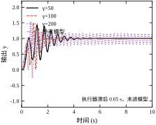
表 61-10 是完整扫描，判据取“尾段 y 的峰峰值”——它直接反映闭环有没有进入持续振荡。
| \gamma | \max\lvert e\rvert | 尾段 y 峰峰值 | \lvert u\rvert_{\max} | 判定 |
|---|---|---|---|---|
| 5 | 0.486 | 0.0195 | 1.91 | 稳定 |
| 10 | 0.404 | 0.0227 | 2.25 | 稳定 |
| 20 | 0.408 | 0.0167 | 2.69 | 稳定 |
| 50 | 0.629 | 0.0004 | 5.73 | 稳定，收敛最快 |
| 100 | 0.871 | 0.0001 | 12.82 | 勉强稳定，控制量已异常 |
| 200 | 1.078 | 0.3526 | 26.04 | 失稳 |
| 400 | 1.118 | 1.4475 | 27.75 | 失稳 |
| 800 | 1.532 | 2.2569 | 41.09 | 严重失稳 |
这张表里有一个非常具体的位置：稳定边界在 \gamma=100 与 200 之间。尾段峰峰值从 1\times10^{-4} 跳到 0.3526，是 3500 倍的跃变，不是渐变。自适应系统的失稳常常就是这样——参数慢慢积累，越过分岔点之后突然塌下来。
把表 61-9 和表 61-10 叠起来看，得到一个很紧的窗口：理想执行器下 \gamma 可以用到 100 甚至更高，一旦带上 0.05 s 滞后，实际上限就压到 50 左右。50 与 100 之间的那一段不是“能用但差一点”，而是“能用但执行器已经在输出 12.82 的峰值控制量”——\gamma=100 时 \lvert u\rvert_{\max}=12.82，接近标称工况 1.43 的 9 倍。这个控制量在真实设备上多半会被限幅，而限幅又会引出 §61.9 的卷绕问题。
所以 §61.3 的那句话在这里得到确认：\gamma 的上界不是靠内环带宽算出来的，是靠未建模动态扫出来的。 先扫、再取一半，是唯一可靠的定法。
未建模动态给的是“越过就失稳”的硬边界，量测噪声给的是“越过就变脏”的软边界。实验 6b 在量测上叠加标准差 0.01 的白噪声，指令保持阶跃 1，结果如表 61-11。
| \gamma | 尾段控制量 rms | 尾段 TV | \hat\theta_1 尾段标准差 | \hat\theta_2 尾段标准差 | 尾段 e 峰峰值 |
|---|---|---|---|---|---|
| 1 | 0.0284 | 0.30 | 0.0145 | 0.0141 | 0.1316 |
| 5 | 0.0189 | 2.22 | 0.0090 | 0.0095 | 0.0324 |
| 10 | 0.0194 | 3.34 | 0.0093 | 0.0093 | 0.0172 |
| 50 | 0.0541 | 8.22 | 0.0261 | 0.0271 | 0.0382 |
| 100 | 0.1423 | 15.57 | 0.0723 | 0.0728 | 0.0527 |
这张表有一个反常的起点：\gamma=1 时尾段控制量 rms 是 0.0284，比 \gamma=5 的 0.0189 还大。原因是 \gamma=1 学得太慢，10 s 时参数还没收敛，尾段的“rms”里混着真实的跟踪过渡，不是纯噪声响应。从 \gamma=5 起才是干净的比较：\gamma 从 5 加到 100，\theta 的尾段标准差从 0.0090 涨到 0.0723（8 倍），控制量 TV 从 2.22 涨到 15.57（7 倍）。
注意一个细节：\theta 的标准差在 \gamma\ge50 之后涨得比 \gamma 本身快。\gamma 从 50 到 100 翻一倍，标准差从 0.0261 涨到 0.0723，是 2.8 倍。这是因为噪声引起的参数抖动与 \gamma 不是线性关系——自适应律对噪声的响应是一个积分器，积分器的输出方差正比于 \gamma^2T_s 再乘上噪声谱密度，而同时闭环对抖动的抑制能力随 \gamma 下降。两头一起作用，就有了这个超线性的增长。
软上界的含义与硬上界不同。 越过硬上界（\gamma>150）系统直接不稳定，没有商量余地；越过软上界（\gamma>50）系统仍然稳定、仍然跟踪得很好，只是执行器在持续做无用功。软上界该划在哪，取决于执行器的寿命要求——这一点没法从控制理论里推出来，只能由机械工程师给。
前面所有实验的对象参数都是常数。真实对象会变。实验 5 把 b 在 t=5 s 时从 1.4 跳到 2.1，跳变前后各留 5 s，一次仿真跑完 12 s。
跳变前，控制器已经收敛到 \hat\theta=(-0.475,+1.149)，两者之和 +0.674，对应于 1/b=0.714（§61.4.3 讨论过，分量的偏差是激励不足造成的，和是准的）。跳变发生的瞬间：
最后这个 +0.476 是整段实验里最漂亮的一个数。跳变后 b=2.1，理想和是 (a-a_m+b_m)/b=1/2.1=0.4762。实测 0.476，与理论值在三位有效数字上重合。 这说明自适应律在 0.83 s 内完成了对执行器增益 50% 变化的重新匹配，而且匹配到的正是那个“唯一被误差看见的组合”。
但有两点必须冷静看待。第一，0.83 s 的恢复时间里，\theta 的移动量是 |(-0.578)-(-0.475)|=0.103 与 |1.055-1.149|=0.094——都不大，因为跳变只有 50%。如果 b 掉到 0.3（掉 79%），\theta_2^* 会从 1.43 涨到 6.67，那是四倍多的移动，恢复时间与瞬时误差都会成倍放大。第二，恢复过程中 \lvert e\rvert_{\max}=0.051 是在这个特定 \gamma 下测的，\gamma 越小恢复越慢、峰值误差越大——参数突变的考核本质上还是在考 \gamma。
阶跃只考“能不能到”，方波还要考“来回切换时准不准”。实验 4 用幅值 1、周期 6 s 的方波，对比 MRAC（\gamma=20）与一个调得不错的固定 PI（k_p=0.9、k_i=2.0），结果见表 61-12。
| 指标 | MRAC | 固定 PI | 比值 |
|---|---|---|---|
| 误差 rms | 0.0752 | 0.1605 | 0.47 |
| 最大误差 | 0.3637 | 0.2581 | 1.41 |
| \lvert u\rvert_{\max} | 2.14 | 1.51 | 1.42 |
| 控制量 TV | 26.8 | 15.0 | 1.79 |
这张表不能只看第一行。MRAC 的误差 rms 是 PI 的 47%，看起来赢了；但最大误差是 PI 的 1.41 倍——MRAC 的平均误差更小，峰值误差更大。原因在方波切换的瞬间：r 从 +1 跳到 -1，参考模型 y_m 按 0.5 s 时间常数往下滑，而 MRAC 的 \theta_2 此刻是按“r=+1”学出来的，它不知道 r 变了，前几十毫秒会推错方向，于是产生一个尖峰。PI 没有这个问题，因为它不含任何“学习”成分，r 一变立刻反向。
代价也摆在同一张表里：MRAC 的控制量峰值是 PI 的 1.42 倍，TV 是 1.79 倍。用 1.8 倍的控制量抖动，换来 53% 的 rms 误差下降，但换来 41% 的峰值误差上升。 这笔交易划不划算，取决于你的指标是“平均精度”还是“不许有尖峰”。前者选 MRAC，后者选 PID——这也是 §61.11 划边界的依据之一。
把四组实验的结论压成一句话：
\underbrace{10\lesssim\gamma\lesssim50}_{\text{噪声与未建模动态夹出的窗口}} \tag{61-37}
下沿 10 来自“\gamma 太小则学得慢、超调大”（表 61-9 里 \gamma=5 的超调 24.28% 仍偏高）；上沿 50 来自“执行器 0.05 s 滞后 + 噪声 0.01”这两个现实条件（表 61-10 的 100 已经勉强，表 61-11 的 100 已经明显变脏）。如果执行器是理想的、量测是干净的，窗口可以放宽到 20 到 100。
这个窗口不是普适的，它绑定在本章这组参数上。但它给出了确定窗口的方法：先扫未建模动态找硬边界，再扫噪声找软边界，最后在两条边界之间取一个数量级。这个方法可以搬到任何对象上，比“凭经验取 10”靠得住。
本节全部数字都来自同一套口径，换一套口径结论就会变形。三件事必须先说清楚。
第一，误差取 e=y-y_m，不是 e=r-y。 两者在稳态下相同（参考模型直流增益为 1），但在过渡段差别很大：r-y 把参考模型自身的上升过程也算成“控制器的错”，于是低 \gamma 的控制器被双重惩罚。本章表 61-9 用的都是 y-y_m——这是自适应控制的标准口径，因为它衡量的正是“你离目标模型多远”，而不是“你离指令多远”。
第二，超调要在同一基准上读。 表 61-9 的超调以 r 的幅值为基准，判据是 y 超过 1.02 的最大量。由于 y_m 自身是单调上升的一阶响应、没有超调，y 相对 r 的超调就等于相对 y_m 的超调，两种读法在这一章恰好一致。换成二阶参考模型就不一致了，那时必须注明基准。
第三，TV 只在同一采样率下可比。 \mathrm{TV}=\sum_k|u[k]-u[k-1]|，噪声不变而采样率翻倍时，求和项数翻倍，TV 也跟着翻倍。本章所有 TV 都是 T_s=0.01 s 下算的，跨章比较时要先折算。表 61-11 里“尾段 TV”用的是最后 1 s 的窗口，比全程 TV 更能反映稳态抖动。
还有一处容易出错的地方：IAE 的积分窗长度。本章一律取 10 s，而低 \gamma 的调节时间是 8.66 s——已经接近窗口末端。如果把窗口缩到 6 s，\gamma=0.5 的 IAE 会被截掉一段尾巴，看起来没那么差，结论就从“低增益代价大”变成“低增益也不错”。IAE 必须配着调节时间一起报，单独一个数说明不了问题。
表 61-10 的硬边界是 100 与 200 之间，而执行器滞后 0.05 s 对应一个 20 rad/s 的极点。把这两个数放在一起，出现一个很整齐的关系：
\gamma_{\max}\approx\frac{5\sim10}{\tau_a}
\tau_a=0.05 s 时给出 100 到 200，与实测的边界完全对上。这个式子在频域里有直观解释：自适应律在低频段表现得像一个增益为 \gamma 的积分器，而执行器滞后在 \omega=1/\tau_a 附近贡献接近 -90^\circ 的相移；两者叠起来，那个频率上的小信号会被“积”成正反馈。所以自适应的稳定边界本质上由“最快的未建模极点”决定，而不是由对象的标称带宽决定。
这条经验式的用法是估量级，不是算准值。它至少能回答三个常见问题：
这个经验式与式 (61-33) 是两个完全不同的上界：前者来自未建模动态，与 T_s 无关；后者来自离散化的步长，与 T_s 成反比。设计时要取两者中更小的那个。本章 T_s=0.01 时式 (61-33) 给 114，这条经验式给 100 到 200——两条边界恰好挨在一起，这是巧合，但也是一个很好的自检：如果两个上界差了一个数量级以上，说明有一侧的模型建错了。
§61.7.4 会说“\sigma=0 时常值扰动下稳态误差精确为零”，这句话很容易被外推成“自适应对扰动有积分作用，所以什么扰动都不留静差”。实验 15 把这条外推否掉了。
对象上加一个斜坡扰动 d(t)=s\,t，指令保持 1，20 s 后的稳态误差：
| 扰动斜率 s | \gamma=5 | \gamma=20 | \sigma=0.2、\gamma=5 |
|---|---|---|---|
| 0 | 0.0000 | 0.0000 | +0.0143 |
| 0.05 | -0.0036 | -0.0009 | -0.0033 |
| 0.20 | -0.0141 | -0.0036 | -0.0525 |
三列数字可以总结成一条很整齐的规律：\sigma=0 时
\lvert e_{ss}\rvert\approx0.36\,\frac{s}{\gamma}
s=0.2、\gamma=5 时给 0.0144，实测 0.0141；\gamma=20 时给 0.0036，实测 0.0036。静差与扰动斜率成正比、与 \gamma 成反比。
这条规律有一个干净的经典解释：自适应律在误差通路上是一个积分器，闭环因此是 1 型系统——对阶跃型扰动零静差，对斜坡型扰动留下常数速度误差。这与 PID 里“PI 能吃掉阶跃、吃不掉斜坡”完全同构。但两者有一个关键差别：PI 的积分增益可以调到任意大，而自适应的“积分增益”是 \gamma，它被稳定边界死死封住。 这就是为什么自适应的斜坡静差不能靠调参消除——\gamma 的上界是 50 到 100，不是无穷。
三个直接推论：
这一节也给 §61.7.4 那句“常值扰动零静差”划了边界：它成立的条件是扰动不随时间增长。 现场最常见的慢漂移（热膨胀、油温上升、催化剂失活）恰好是缓变斜坡，所以“\sigma=0 就万事大吉”是一个很危险的错觉。
把本章出现过的可调量列成表 61-13。它们的数量比 PID 多，但分工比 PID 清楚——每个旋钮只负责一类失效。
| 参数 | 符号 | 本章取值 | 管什么 | 调错的后果 |
|---|---|---|---|---|
| 自适应增益 | \gamma | 10～50 | 学得多快 | 小则慢、大则失稳 |
| 初值 | \theta_0 | 0 或标称值 | 起点、也是 \sigma 的锚点 | 大误差、起始饱和 |
| 泄漏系数 | \sigma | 0～0.2 | 抗漂移 | 静差、跟踪变钝 |
| 死区阈值 | \Delta | 0～0.02 | 抗噪声 | 静差、响应迟钝 |
| 参考模型 | a_m,b_m | 2.0, 2.0 | 目标动态 | 目标不可达或过度激进 |
下面逐个说它们的物理含义，重点不是“调多少”，而是“它在改哪一件事”。
这是最容易误解的一个。在 PID 里，增益 k_p 直接改变回路增益，加大它立刻让闭环变快、也立刻吃掉相位裕度。\gamma 不是这样：它不进入内环，闭环的瞬时动态由 \theta 的当前值决定，\gamma 只决定 \theta 移动多快。所以“加大 \gamma 会不会振荡”这个问题，答案取决于“参数移动的速度是否已经与对象动态可比”。
这一点可以用数据说明。表 61-9 里 \gamma 从 0.5 加到 50，是 100 倍，而调节时间只从 8.66 s 降到 2.53 s，是 3.4 倍。拟合一下：
t_s\propto\gamma^{-0.27} \tag{61-38}
指数只有 0.27，是强亚线性。 这说明 \gamma 的边际收益递减得非常快：头十倍收益最大，之后每加十倍只能再挤出一小截。而这个亚线性不是数值巧合，它来自“参数收敛需要误差持续存在”这个事实——参数学得越快，误差消失得越早，后面就没东西可学了。误差既是学习的驱动，又是学习的燃料，烧完就没了。
所以对 \gamma 的正确心态是：它是一个“够用就好”的参数，不是“越大越好”的参数。 在 §61.6.7 的窗口 10 到 50 里，取 20 与取 50 的差别只有 0.86 s 的调节时间，而 TV 差 4.8；取 10 与取 20 的差别是 0.75 s 与 2.5 的 TV。如果没有特别的快速性要求，取窗口下限附近更划算。
\theta_0 在第一眼只是一个初值，但它有第二个身份——\sigma 修正的锚点。§61.7.4 的式 (61-39) 里那一项 -\sigma(\theta-\theta_0) 会把 \theta 往 \theta_0 拉，所以 \theta_0 不只是“从哪里出发”，还是“漂移时被拉回哪里”。
这带来一个不太直观的结论：如果 \theta_0 填的是一个错的标称值，\sigma 会把 \theta 往那个错值上拉。填 0 至少是“无偏好”，填错值则是“有偏好的错误”。本章全部实验取 \theta_0=0，就是因为这个对象没有可靠的标称参数；如果现场有出厂标定值，填标定值是更好的选择——但要在标定值失配时重新审一遍 \sigma 的取值。
\sigma 修正（泄漏）的形式是在自适应律后面加一项
\dot\theta=-\gamma e\phi-\sigma(\theta-\theta_0) \tag{61-39}
它把纯积分器变成了“带泄漏的积分器”：没有误差驱动时，\theta 会指数地退回 \theta_0，时间常数 1/\sigma。
实验 7 在对象上加常值扰动 d=0.3，扫了四档 \sigma。图 61-8 左边是 \|\theta\| 的轨迹，右边是稳态误差。
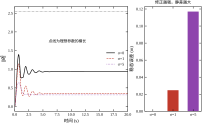
| \sigma | 稳态误差 | \hat\theta 终值 | \|\theta\| | IAE |
|---|---|---|---|---|
| 0 | 0.0000 | (-0.362,+0.862) | 0.935 | 0.3910 |
| 0.2 | 0.0050 | (+0.236,+0.262) | 0.352 | 0.4431 |
| 1 | 0.0247 | — | 0.345 | 0.6917 |
| 5 | 0.1170 | — | 0.312 | 2.5060 |
这张表要分两段读。
\sigma=0 那一行是个好消息：常值扰动下稳态误差精确为零，\theta 收敛到 (-0.362,+0.862)，和 +0.500，正好等于 u_{ss}=(ay-d)/b=(1-0.3)/1.4=0.5。不需要 \sigma，纯 Lyapunov 律就把常值扰动吃干净了——因为常值扰动落在回归向量张成的空间里（§61.2.2 已经说明过）。要注意这个结论只对常值扰动成立，斜坡扰动会留静差，见 §61.6.10。
所以 \sigma 的收益不在“常值扰动”，而在“不落在张成空间里的扰动”：时变扰动、未建模高频、量测偏置的漂移分量。这些东西会让纯积分器缓慢单向累积，最后顶到限幅。\sigma 给它装了一个泄放阀，保证 \theta 始终有界。
代价写在下面三行。\sigma=0.2 时稳态误差 0.0050、\|\theta\| 从 0.935 掉到 0.352——参数被拉向零点，等效于“少补偿了一部分”。\sigma=1 时误差 0.0247、IAE 从 0.3910 涨到 0.6917；\sigma=5 时误差 0.1170、IAE 涨到 2.5060，已经是 \sigma=0 的 6.4 倍。
规律很清楚：\sigma 每加一个数量级，稳态误差大致也加一个数量级。取 \sigma=0.2 时误差还在 0.5% 以内，几乎不影响指标；再往上就明显了。所以工程上的常用区间是 0<\sigma\le0.2，只在“确知有慢漂移”时才往上加。
死区的做法是：\lvert e\rvert\le\Delta 时冻结自适应，不更新 \theta。
\dot\theta=\begin{cases}-\gamma e\phi, & \lvert e\rvert>\Delta\\ 0, & \lvert e\rvert\le\Delta\end{cases} \tag{61-40}
它的作用对象只有噪声。实验 8 在量测上加 0.01 的白噪声，扫三档死区。
| \Delta | \hat\theta 尾段标准差 | 尾段误差 rms |
|---|---|---|
| 0（无死区） | 0.0057 | 0.0027 |
| 0.02 | 0.0032 | 0.0018 |
| 0.05 | 0.0000 | 0.0200 |
\Delta=0.02 是个漂亮的工作点：\theta 的抖动从 0.0057 降到 0.0032（降 44%），而尾段误差 rms 反而从 0.0027 降到 0.0018（降 33%）——两头都变好了。原因不难找：\Delta=0 时噪声让 \theta 持续微抖，微抖又通过 u=\theta^{\mathsf T}\phi 变成输出上的抖动，闭环误差反而比“少调一点”更大。适度的死区把这条噪声通路掐断了。
但 \Delta=0.05 就过头了。\theta 的标准差精确为零——自适应完全停住——可代价是尾段误差 rms 涨到 0.0200，是 \Delta=0.02 的 11 倍。这 0.02 的误差里没有噪声成分，全是“该调而没调”留下的静差。
死区的取值有一条硬约束：\Delta 必须小于你能容忍的稳态误差。 它本质上是一个“误差小于这个数我就当没看见”的承诺，承诺得越大，静差就越大。\Delta=0.05 在指令幅值 1 的系统里意味着“允许 5% 的静差”，如果指标是 2%，这个值直接违约。
但这条约束不是死的，它和 \gamma 绑在一起。 实验 12 把 \Delta 与 \gamma 放在一张二维表里（噪声 0.01、20 s、五档 \gamma、两档 \Delta）：
| \gamma | \Delta=0.02：\hat\theta_1 标准差 | \Delta=0.02：尾段 rms | \Delta=0.05：\hat\theta_1 标准差 | \Delta=0.05：尾段 rms |
|---|---|---|---|---|
| 2 | 0.0008 | 0.0010 | 0.0005 | 0.0208 |
| 5 | 0.0016 | 0.0015 | 0.0000 | 0.0146 |
| 10 | 0.0032 | 0.0018 | 0.0000 | 0.0200 |
| 20 | 0.0053 | 0.0011 | 0.0000 | 0.0028 |
| 50 | 0.0163 | 0.0033 | 0.0000 | 0.0028 |
横向读：\Delta=0.02 时，\gamma 从 2 加到 50，参数抖动涨了 20 倍（0.0008 到 0.0163），而尾段误差一直在 0.001 到 0.003 之间——死区把噪声挡在了参数之外，代价可控。
纵向读就出现了反常：\Delta=0.05 在 \gamma=20 与 50 时尾段误差只有 0.0028，与 \Delta=0.02 几乎一样；而在 \gamma=2 与 10 时却是 0.0208 与 0.0200，大了一个数量级。同样一个 0.05 的死区，在高增益下几乎免费，在低增益下要付 2% 的静差。
原因要从“冻结发生在哪一刻”里找。表格里 \Delta=0.05、\gamma 从小到大，\lvert e\rvert 最后一次超过 0.05 的时刻是 5.25 s、4.25 s、3.02 s、3.16 s、1.76 s——大致随 \gamma 增大而提前；而那一刻参数距真值的距离是 0.807、0.554、0.376、0.189、0.122，随 \gamma 增大而迅速缩小。
这两条合起来就是死区静差的全部机制：死区把 \theta 冻结在“误差刚刚降到 \Delta 以下”的那个瞬间，冻结之后参数不再更新，剩下的误差就是“这副被冻住的参数”造成的偏差。\gamma 小的时候，误差降得慢，参数在跨越 \Delta 时只学了一半（距离真值 0.8），冻住的就是半成品；\gamma 大的时候，参数在跨越 \Delta 之前已经贴近真值（距离 0.07 到 0.19），冻住的几乎是成品。
所以死区的代价不是 \Delta 的函数，是 (\gamma,\Delta) 的函数。 这解释了两件事：其一，先加死区再补 \gamma 的顺序必然是错的（§61.8.2 会把它写成一条流程规则）；其二，如果因为噪声必须用大死区，正确的补偿办法不是减小死区，而是提高 \gamma——让参数在冻结前学得更充分。
这张表还能读出一个细节：两个分量的标准差几乎相等（\Delta=0.02、\gamma=50 时是 0.0163 与 0.0161）。这与“噪声沿回归向量 \phi 的方向推”的图景吻合——稳态时 y\approx r\approx1，\phi 近似指向 (1,1)，于是两个分量被同样幅度地推着走。误差只能看见 \phi 张成的那个方向，噪声也只能污染那个方向（§61.1.3）。
a_m、b_m 不是“控制器的参数”，而是目标的参数，但它们对控制器的难度有决定性影响。
b_m 决定 \theta_2^*=b_m/b。本章 b_m=2.0、b=1.4，\theta_2^*=1.43；如果把 b_m 提到 4.0（参考模型快一倍），\theta_2^* 变成 2.86，起始阶段控制量翻倍，u_{\max} 从 1.43 涨到接近 3——很可能直接顶到限幅，把 §61.9 的卷绕问题提前引爆。
a_m 决定两件事：误差的自然衰减速率（式 61-10 里的 -a_me），以及自适应律“能看见多少误差”。a_m 越大，误差消失得越快，\gamma 的有效作用时间越短；a_m 越小，误差存在得久，但跟踪本身就慢。
本章取 a_m=b_m=2.0 是一个刻意保守的选择：比对象快一倍，又没快到逼出饱和。如果换对象，这两个数应当跟着“对象标称带宽的 2 到 3 倍”重算，而不是沿用本章的值。
最后要提醒一件事：这五个旋钮不是正交的。
§61.8 会把这套相互影响整理成一个有先后顺序的调参流程，避免“调 A 把 B 弄坏、再调 B 把 A 弄坏”的循环。
把 \theta 看成平面上的一个点，前面几节的结论可以在图上一次画出来。
式 (61-6) 说，稳态跟踪正确的条件是 \theta_1+\theta_2=(a-a_m+b_m)/b。本章 a=1、a_m=b_m=2，右端等于 1/b，在 (\theta_1,\theta_2) 平面上是一条斜率为 -1 的直线。这条直线上的每一点都能把稳态误差压到零，线上不同的位置只影响过渡过程——这就是“组合正确、分量不对”的几何含义。
自适应轨迹从 \theta_0=(0,0) 出发，朝这条直线走。走到之后，它只能沿着直线滑动，滑动到哪一点由激励与噪声决定，与跟踪指标无关。三档 \gamma 的终点可以验证这一点：
| \gamma | \hat\theta 终值 | 和 | 距真值 |
|---|---|---|---|
| 2 | (-0.142,+0.860) | 0.718 | 0.807 |
| 20 | (-0.567,+1.281) | 0.714 | 0.209 |
| 100 | (-0.722,+1.436) | 0.714 | 0.011 |
三个和分别是 0.718、0.714、0.714——差异在千分位，全部落在同一条直线上；而距真值的距离从 0.807 一路降到 0.011，走的全是沿直线的那一段。也就是说，\gamma 只改变“在直线上滑多远”，不改变“离直线多近”。
这个图像直接给出两条工程结论。
第一，投影边界不要做成轴对齐的矩形。 §61.9.2 的 \Omega 如果按 |\theta_i|\le20 取，那么在斜率为 -1 的直线附近，先撞到的往往是某一个分量的边界，撞上之后另一个分量就再也上不去了，等效于把自适应冻结在一个错误的位置上。正确做法是把 \Omega 做成“沿直线方向可以很长、垂直直线方向很窄”的带子，比如用 \theta_1+\theta_2 与 \theta_1-\theta_2 两个坐标分别设限。
第二，判断“学没学会”要看垂直距离，不是看分量。 现场最常见的误判是：看到 \hat\theta_1=-0.14、与标称的 -0.71 差得远，就认为自适应没工作。其实那时的稳态误差可能已经是零——它只是停在了直线上的另一个点（\gamma=2 那一行）。唯一有意义的判据是 \hat\theta_1+\hat\theta_2 与 (a-a_m+b_m)/b 的差，这也是 §61.10.2 参数可信度判据的来源。
最后澄清一个容易混的地方：本章 a=1，所以 (a-a_m+b_m)/b 与 1/b 数值相同，前面几节有时直接写成 1/b。换一个对象，a\ne1，正确的组合是 a/b——用 1/b 去核对会得到系统性的偏差，而且这个偏差会随 a 增大而放大。
§61.7.7 说过这几个旋钮会互相抵消。避免“调 A 坏 B”的唯一办法是固定一个顺序，每次只动一个，动完立刻回到上一层复核。表 61-14 是本章推荐的顺序。
| 步骤 | 动作 | 通过判据 | 不通过时怎么办 |
|---|---|---|---|
| 1 | \gamma=0，\theta 固定为标称值 | 闭环稳定、无静差 | 回去查内环，与自适应无关 |
| 2 | \gamma=1\sim5，\theta_0=0 | \theta 朝正确方向动 | 查控制方向符号 |
| 3 | 扫 \gamma 至失稳（带真实执行器） | 找到硬边界 | 用实测的 \tau_a，不要用理想执行器 |
| 4 | 在噪声下扫 \gamma | 找到软边界 | 噪声水平按现场实测，不要用 0 |
| 5 | 取窗口下沿的 1/3\sim1/2 | 跟踪指标达标 | 不达标先放慢参考模型，别硬加 \gamma |
| 6 | 加死区 \Delta，从 0 开始加倍试探 | \theta 抖动下降、误差不涨 | 停在“误差开始涨”的前一档 |
| 7 | 加 \sigma\le0.2 | 无慢漂移 | 还有漂移就查是否有外部常值偏置 |
| 8 | 加饱和处理与 \lvert\theta\rvert 硬限 | 大指令下 \theta 不卷绕 | 见 §61.9.3 |
| 9 | 标定 \theta_0 | 起始误差下降 | 标定值不可信就退回 0 |
第 1 步最容易被跳过，也最不该跳过。\gamma=0 时自适应律完全不起作用，控制器退化成一个固定的线性控制器 u=\theta_0^{\mathsf T}\phi。如果这一步就不过关，后面所有调参都是在给一个本身有问题的内环打补丁。
第 3 步有一个常见的偷懒：用理想执行器扫边界。这会把边界高估一大截——本章实测，理想执行器下 \gamma=100 还能收敛，加了 0.05 s 滞后后 200 就失稳，可用值实际上差了一个数量级。扫边界必须用真家伙，或者至少用一个能代表真实滞后的模型。
新手常做的事是：先凭经验把 \gamma 设成 50，再看到抖动就把死区加到 0.05，再看到静差就把 \gamma 提到 100。这三步做完，系统“看起来”好了——但三个参数都停在了互相抵消的位置上，任何一个微调都会把另外两个的问题翻出来。
正确的做法是从最保守的一头往里走。\gamma 从 5 开始，一路加到指标达标或出现抖动；出现抖动时先不动 \Delta，而是回退 \gamma 到上一档。只有当“\gamma 已经退到指标不达标”时，才考虑加死区换一点抖动空间。这个顺序保证每一步的因果是清楚的。
有一个量化的理由支持“往里走”：表 61-9 里 \gamma 从 10 到 20，IAE 从 0.4435 降到 0.3027（降 32%），TV 从 7.3 涨到 9.8（涨 34%）——性价比大致是 1:1；而从 50 到 100，IAE 从 0.1832 降到 0.1265（降 31%），TV 从 14.6 涨到 19.9（涨 36%）——性价比还是一样。既然每一段的交换比都差不多，那就没有理由去冒高 \gamma 的险：低 \gamma 的那一段，同样的代价能换到同样的收益，而失稳风险小得多。
调参现场最耗时的不是“调”，而是“判断现在是什么问题”。表 61-15 是本章实验里实际出现过的若干种症状，以及它们对应的原因。
| 症状 | 最可能的原因 | 先查什么 | 处理 |
|---|---|---|---|
| 稳态误差恒定不为零 | 死区过大，或 \sigma 过大 | \Delta、\sigma | 减小，直到误差进入指标 |
| \theta 单向缓慢漂到限幅 | 饱和期间的错误误差在积分 | u 是否长期顶限幅 | 加饱和冻结，见 §61.9.3 |
| 控制量持续高频抖动 | \gamma 过大 + 量测噪声 | \gamma、\Delta | 降 \gamma，再加死区 |
| 阶跃起始段先冲后回 | \theta_0 远离真值 | \theta_0、初段 \lvert u\rvert | 给标定初值 |
| 稳态时 \theta 缓慢来回摆 | \gamma 逼近稳定边界 | 未建模动态 | 降到实测边界的 1/3 |
| 参数突变后恢复极慢 | \gamma 小，或死区大 | \gamma、\Delta | 提高 \gamma，或减小 \Delta |
| 跟踪始终有固定滞后 | 参考模型比执行能力快 | a_m、b_m | 放慢参考模型 |
表里第三行与第五行要分清。“高频抖动”和“缓慢来回摆”是两种病：前者是 \gamma 太大放大了噪声，频率跟着噪声走，降 \gamma 立刻见效；后者是 \gamma 已经逼近未建模动态给出的稳定边界，振荡频率由执行器或未建模模态决定，与噪声无关，只降一点 \gamma 不见效，得降一个数量级。
把全章的实测压缩成三句话：
第一，\gamma 的上界靠扫，不靠算。 解析上界（式 61-33 的 \gamma\ll114）只考虑了离散化，没有考虑执行器滞后与噪声。真实上界由这两者决定，只能实测。本章实测硬边界在 100 与 200 之间，可用值 50；软边界在 50 附近，可用值 20 到 30。
第二，\gamma 的收益是亚线性的，代价是线性的。 式 (61-38) 给出 t_s\propto\gamma^{-0.27}，而 TV 大致正比于 \gamma。一头是 0.27 次方，一头是 1 次方——这个不对称决定了最优工作点一定在窗口的低端，而不是高端。
第三，每个鲁棒化措施都要付出静差。 \sigma 付静差（\sigma=0.2 时 0.0050），死区付静差（\Delta=0.05 时 0.0200），\theta 硬限幅付“彻底失效”的风险（一旦长期贴在限幅上，控制器就退化成固定增益）。所以这些措施不是“加了更安全”，而是“用确定的小损失换不确定的大损失”——加之前必须先确认那个大损失真的存在。
自适应控制器上线后，最该被记录的不是跟踪误差，而是 \theta 本身。三条曲线：
第 2 条与 §61.10 的“参数估计可信度”直接相关，下一节会给出判据。
把九步在本书这组参数上走一遍，看看每一步输入什么、输出什么、被哪张表卡住。场景设定：对象 a=1.0、b=1.4，执行器一阶滞后 0.05 s、限幅 3，量测噪声标准差 0.01。
第 1 步，\gamma=0、\theta=\theta_0。 控制器退化成固定增益 u=-0.7143y+1.4286r，闭环极点由 \theta 决定，实测稳定、无静差。这一步通过，说明内环本身没问题，后面所有的异常都可以归因于自适应。
第 2 步，\gamma=1\sim5、\theta_0=0。 实验 2 的 \gamma=2 一行：t_s=6.51 s、超调 28.97%、\hat\theta 终值 (-0.142,+0.860)。方向和符号都对，\theta_1 变负、\theta_2 变正，说明自适应律在往正确方向推。这一步通过。
第 3 步，带真实执行器扫硬边界。 表 61-10：\gamma=100 时尾段峰峰值 1\times10^{-4}，\gamma=200 时 0.3526，边界在两者之间。同时要记下另一列：\gamma=50 的 \lvert u\rvert_{\max} 已经是 5.73，\gamma=100 是 12.82。这两个数都超过限幅 3——也就是说，即使不考虑稳定性，\gamma\ge50 也已经把执行器推到饱和区了。
第 4 步，在噪声下扫软边界。 表 61-11：\gamma=50 时 \theta 尾段标准差 0.0261，\gamma=100 时 0.0723。按“标准差不超过参数典型值的 2%”这条常用标准（\|\theta^*\|=1.60，即 0.032），软边界落在 50 与 100 之间。
第 5 步，取窗口下沿的 1/3 到 1/2。 硬边界 150、软边界 50，取小者 50，再折半，得 20 到 25。这里有一个容易被忽略的复核：表 61-10 里 \gamma=20 的 \lvert u\rvert_{\max}=2.69，\gamma=50 是 5.73。限幅 3 这条约束把 \gamma 又往下压了一格，最终取 20。
第 6 步，加死区。 噪声 0.01，按“两倍噪声”取 \Delta=0.02。查 §61.7.5 的二维表：\gamma=20、\Delta=0.02 时 \hat\theta_1 标准差 0.0053、尾段误差 rms 0.0011——抖动比无死区时（0.0105）降了一半，误差没有上升。通过。同时复核 \Delta=0.02<2\% 的静差指标，通过。
第 7 步，\sigma。 现场没有常值偏置，也没有缓慢漂移的迹象，取 0。若日后发现 \theta 单向漂移，从 0.05 起试，上限 0.2。
第 8 步，饱和处理。 限幅 3 已知，饱和冻结打开，\lvert\theta_i\rvert\le20 硬限保留。这一步在实验 9 里验证过：IAE 不变，\|\theta\|_{\max} 从 28.28 降到 0.46。
第 9 步，\theta_0 标定。 出厂标定给出 a=1.0、b=1.4，代入式 (61-5) 得 \theta_0=(-0.7143,+1.4286)。标定值可信，采用。
最终卡片：\gamma=20、\Delta=0.02、\sigma=0、\theta_0=(-0.7143,+1.4286)、限幅 3、冻结开、硬限 20。预期性能：理想执行器下 t_s=3.39 s、超调 7.34%、IAE 0.3027；带 0.05 s 滞后时 \max\lvert e\rvert=0.408。
这张实录里最值得回味的不是最后那组数，而是第 5 步的复核：按稳定性与噪声定的 \gamma=50，被限幅这一条从侧面否掉了。三张表（表 61-9、61-10、61-11）单独看都能给出一个“可用”的 \gamma，合起来才给出唯一可用的那个。调参的本质不是找到最优值，而是找到所有约束的交集。
实录走完，纸面上留下了七个参数。但现场真正需要留下来的东西比这七个参数多得多，而且六个星期之后你会发现，忘记“为什么取这个值”比忘记“取了多少”要致命。所以调参过程应当落在一张固定的表上，表头至少六列：
| 日期/工况 | 这一轮改了什么 | \gamma | \Delta | 实测指标（t_s / 超调 / IAE / 静差） | 结论（保留 / 否掉 / 待复核） |
|---|---|---|---|---|---|
| 03-11 空载 | 首轮，\theta_0=0 | 2 | 0 | 6.51 / 28.97% / 1.0243 / 0 | 方向对，太慢 |
| 03-11 空载 | \gamma 加倍 | 5 | 0 | 4.62 / 17.20% / 0.6812 / 0 | 保留作备选 |
| 03-11 空载 | 继续加倍 | 50 | 0 | \lvert u\rvert_{\max}=5.73 | 否掉：限幅 3 已饱和 |
| 03-12 带载 60% | 复核上轮备选 | 20 | 0.02 | 3.39 / 7.34% / 0.3027 / 0.0011 | 采用 |
这张表比“最终参数”多提供了三样东西。
第一是路径。 上表里 \gamma 从 2 走到 20，中间试过 5 和 50，50 是被限幅否掉的。三个月后如果负载增加、执行器换成更大的型号，限幅这条约束松了，你会想把 \gamma 往上推——这时表告诉你“50 曾经被否掉，但否掉的理由是限幅，不是稳定性”。一个被否掉的方案，它的否决理由和方案本身一样重要，因为约束变了，理由就可能失效。
第二是工况。 同一组参数在空载与 60% 带载下的表现可能差一倍，只记“最终参数”等于把一个依赖工况的结论写成了无条件结论。至少要在“日期/工况”这一列写清负载、温度、供电电压三项里会变的那些。
第三是对照。 每次只改一个参数——这是 §61.8.2 已经强调过的原则，而记录表是它唯一的执行手段。一次改两个参数，表里那一行就无法归因，事后既不能说“是这个改动起的作用”，也不能说“不是”。
记录表还有两条容易被省略的写法。其一，指标必须写口径。t_s 按 2% 还是 5% 带算、IAE 的积分窗多长、静差取哪一段的均值，这三个口径不写清，两张表之间就没法比（§61.6.8）。其二，控制量要单列一栏。多数人只记跟踪指标，而本章反复出现的失效都是从控制量先露出苗头的：\lvert u\rvert_{\max} 顶到限幅、TV 突然上台阶、u 长期贴着同一侧。跟踪误差是结果，控制量是过程，出问题时先坏的是过程。
如果只能记三列，就记“改了什么、\gamma 是多少、\lvert u\rvert_{\max} 是多少”。这三列能回答现场九成的问题：这套参数是不是已经推到饱和、上次改动有没有生效、以及要不要回退。
基础版 MRAC 在教科书条件下是完备的，一进现场就露出五个短板：回归向量可能无界、参数可能跑出物理范围、饱和期间参数会卷绕、持续扰动会让参数漂移、参数永远不收敛。这一节给五副补丁，每一副都注明它治什么、代价是什么。
基础律 (61-14) 的更新量是 \gamma e\phi，它与 \|\phi\| 成正比。\phi=(y,r)，r 是操作员给的指令——也就是说，操作员把指令从 1 加到 10，参数更新的步长会自动放大 10 倍。这不是设计意图，是“没做归一化”的副作用。更糟的是，如果 y 因为某种原因发散（比如传感器故障），\phi 会跟着发散，自适应律会在几拍之内把 \theta 推到限幅。
归一化的做法是把更新量除以 \|\phi\| 的某个函数：
\dot\theta=-\gamma\,\frac{e\,\phi}{1+\phi^{\mathsf T}\phi} \tag{61-41}
分母里的 1 不能省。省掉它就变成 \dot\theta=-\gamma e\phi/\|\phi\|^2，当 \phi\to0（例如系统停在零输出、指令也为零）时分母趋零，更新量反而爆炸。加 1 之后，\phi 小的时候行为与基础律几乎一样，\phi 大的时候更新量被封顶在 \gamma e/\|\phi\|，随 \|\phi\| 反比衰减。
归一化改变了 \gamma 的量纲，也改变了它的可用数值。基础律里 \gamma=20 对应本章的窗口；归一化之后因为分母恒大于 1，同样的动态需要更大的 \gamma，量级大致是 \gamma_{\text{norm}}\approx\gamma(1+\|\phi\|^2)\approx3\gamma。换公式必须重扫 \gamma，这是移植时最常见的错误。
归一化管住了步长，管不住累积。如果存在持续的未建模偏置，\theta 会一直朝一个方向走，直到顶到硬限幅 |\theta_i|\le20——那时控制量已经毫无意义。
投影算子的思路是：先用先验知识圈出一个“物理上可能”的凸集 \Omega，然后规定 \theta 只能在这个集合里活动。
\Omega=\Big\{\theta:\ \theta_i^{\min}\le\theta_i\le\theta_i^{\max},\ i=1,2\Big\} \tag{61-42}
更新时做一次判断：如果 \theta 已经在边界上，而更新方向指向集合外，就把更新量投影到边界的切平面上（即只保留沿边界的分量）。
投影有两个好处。第一，它不破坏 Lyapunov 证明：只要真值 \theta^*\in\Omega，投影满足 \tilde\theta^{\mathsf T}\mathrm{Proj}(\tau)\le\tilde\theta^{\mathsf T}\tau，式 (61-15) 的负定性原样保留。第二，它把“参数漂移到荒谬值”这种失效模式从物理上排除，而不是靠调小 \gamma 去避免。
代价是先验知识。\Omega 的边界要从“b 的物理范围”倒推：如果执行器增益的变化范围是 \pm50\%，那么 \theta_2^*=b_m/b 的变化范围就是 [0.95,2.86]，\Omega 的第二个分量就该按这个取。给宽了没用，给窄了会把真值排除在外——真值一旦落在 \Omega 外，投影就变成了一个持续的单向推力，闭环必然留静差。
执行器饱和是自适应控制最经典的陷阱。逻辑很直白：u 被限幅在 2，对象只能走到 2.8（因为 y_{ss}=bu/a=1.4\times2=2.8），而指令是 5，于是误差 e 永久停在 -2.2。自适应律看到这个 -2.2 的误差，认为“参数还不够大”，继续往上推 \theta，可 \theta 再大也没用——u 已经被限幅卡死了。误差是饱和造成的，不是参数不够造成的，但自适应律分不清这两件事。
实验 9 把这个过程完整地跑了一遍：指令幅值 5、限幅 2、\gamma=20。
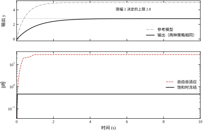
| 分支 | 末端 y | 末端 e | \hat\theta 终值 | \|\theta\|_{\max} | IAE |
|---|---|---|---|---|---|
| 不限幅（对照） | 5.000 | 0.000 | (-0.756,+1.471) | 2.56 | 0.393 |
| 限幅 2，自由自适应 | 2.800 | -2.200 | (+20.000,+20.000) | 28.28 | 22.402 |
| 限幅 2，饱和冻结 | 2.800 | -2.200 | (+0.002,+0.465) | 0.46 | 22.402 |
三行数据，三个结论。
第一行是基线：不限幅时，输出准确到 5.000，\theta 收敛到 (-0.756,+1.471)，和 0.715，与 1/b=0.714 吻合。IAE 只有 0.393。
第二行是灾难：限幅之后输出卡在 2.800，末端误差 -2.200。\theta 被推到 (+20.000,+20.000)——两个分量同时顶到硬限幅，范数 28.28。注意 \hat\theta_1 从负变正，物理上意味着“对象的时间常数变成了负数”，也就是控制器认为这个对象是开环不稳定的。这个判断完全错误，但自适应律没有别的选择：误差是负的、y 是正的，按式 (61-17) 它只能把 \theta_1 往正方向推。
第三行是补丁的效果：加“饱和时冻结自适应”之后，\theta 只走到 (+0.002,+0.465)，范数 0.46，完全在合理范围内。而 IAE 是 22.402——与第二行一字不差。
这个“一字不差”是全章最有价值的一个观测。它说明：在饱和期间，自适应完全不产生任何跟踪收益，只产生参数漂移。 冻结它是零成本的——不牺牲一点性能，只消掉一个隐患。如果本章只留一条工程建议，就是这一条。
冻结的实现只有一行：
if abs(u_raw) >= umax:
drive[:] = 0.0判据要用未限幅的 u_{\text{raw}} 而不是限幅后的 u，否则永远检测不到饱和——限幅后的值天生不超过 u_{\max}。
\sigma 修正（式 61-39）是给积分器加泄漏，代价是静差。另一条路是 e 修正：把泄漏项乘以 |e|，
\dot\theta=-\gamma e\phi-\nu\,\lvert e\rvert\,\theta \tag{61-43}
它的巧妙之处在于：当 e\to0 时，泄漏项自动消失。所以它不会像 \sigma 修正那样留下稳态误差——e=0 时式 (61-43) 退化成纯粹的基础律，静差为零。
那它靠什么保证有界？靠“e 大的时候漏得凶”。当扰动把 e 顶起来时，泄漏项与 |e| 同阶增长，把 \theta 拉回来；e 小的时候它就不管了。这正好符合“只在出问题时干预”的设计哲学。
代价是它给不出零静差的理论保证，只能给出“误差最终有界，界与 \nu 成反比”这种较弱的结论。工程上这个差别通常可以接受——因为真正的限制往往来自噪声与未建模动态，而不是理论上的渐近性。
两副补丁怎么选：确定有常值偏置 → 用 \sigma（接受静差，换取彻底的抗漂移）；不确定扰动形态 → 用 e 修正（保住零静差，接受有界性而非收敛性）。 两者不要叠加使用，叠加会把静差与抖动都放大一遍。
前面所有讨论都绕不开一个事实：MRAC 只保证误差收敛，不保证参数收敛（式 61-16 之后已经说明）。想同时得到两者，需要“持续激励”（PE）条件——即回归向量要在所有方向上都被充分激发。在跟踪任务里，PE 条件等价于“指令要足够丰富”，而操作员给的指令往往就是一个阶跃，谈不上丰富。
复合自适应（composite adaptation）绕开了这个要求。做法是把历史数据存进一个“数据栈”：
\mathcal{D}=\big\{(\phi_j,\ \dot y_j)\big\}_{j=1}^{N} \tag{61-44}
每一项记录了某个时刻的回归向量与实测的（或用滤波器重构的）\dot y。然后在自适应律里加一项，让它同时拟合这些历史数据：
\dot\theta=-\gamma e\phi-\gamma\sum_{j\in\mathcal{D}}\phi_j\big(\dot y_j-\phi_j^{\mathsf T}\theta\big) \tag{61-45}
只要数据栈里的 \{\phi_j\} 线性无关（秩条件），第二项就会把 \theta 推向唯一满足所有历史数据的点——不需要当前指令持续激励，因为激励已经被“存起来”了。
这条路在本章不展开，因为它需要处理微分重构、数据栈的替换策略、秩条件的在线判定，已经不属入门范围。但要记住它的存在：“MRAC 不能辨识参数”不是物理定律，只是“只用当前一拍数据”这个设计的后果。把数据存起来，就能突破。
表 61-16 是汇总。
| 补丁 | 治什么 | 代价 | 什么时候必须加 |
|---|---|---|---|
| 归一化 | 指令大幅变化时步长失控 | 需重扫 \gamma | 指令幅值变化超过一个数量级 |
| 投影 | 参数漂出物理范围 | 需要先验边界 | 有可靠的参数范围知识 |
| 饱和冻结 | 饱和期间参数卷绕 | 无 | 只要执行器有限幅就必须加 |
| e 修正 | 有界扰动下的参数漂移 | 破坏零静差 | 有未知形态的持续扰动 |
| 复合自适应 | 参数不收敛 | 实现复杂、需数据栈 | 需要参数用于诊断或前馈 |
只有第三行的“代价”是“无”，也只有它在任何场合都该加。其余四副都要看条件——补丁不是越多越安全，加错了照样出问题。
前面六节都默认自适应律与控制回路同节拍运行。这不是必须的。参数动态本来就比对象动态慢一个数量级（§61.1.6 的“时间尺度分离”），把自适应律降采样到每 N 拍算一次，在原理上完全成立，还能省下大量算力。
具体有两种写法，效果完全不同，必须分清：
写法一，保留 T_s 作为步长。 每 N 拍执行一次 \theta\leftarrow\theta-\gamma T_se\phi。此时每拍的平均更新量是原来的 1/N，等效增益变成 \gamma/N。想让动态不变，就要把 \gamma 放大 N 倍。
写法二，用更新间隔 T_u=NT_s 作为步长。 \theta\leftarrow\theta-\gamma T_ue\phi。此时每 N 拍的总移动量与“每拍更新”完全相同，平均学习速率不变，但单次的移动量大了 N 倍——式 (61-33) 的步长约束相应收紧 N 倍，\gamma\ll1.14/T_u。本章 N=10 时上界从 114 掉到 11.4，正好卡在可用窗口下沿，不可接受。
所以工程上该用的是写法一：降采样的同时把 \gamma 乘回去，保持等效学习速率不变。本章 \gamma=20、N=10，实际写进代码的增益是 200，但每 10 拍才更新一次。
代价是延迟。参数突变的恢复时间会从 0.83 s 增加大约 NT_s=0.1 s，相对 0.83 s 只多 12%，可以接受。但如果 N 取到 100，延迟就是 1 s，比恢复时间本身还长——那时不是“慢一点”，而是“追不上”。经验上 N 的上限是“更新周期不超过参考模型时间常数的 1/5”，本章即 N\le10。
降采样真正的价值在慢速控制器上。一个扫描周期 100 ms 的 PLC 跑不了 10 ms 的自适应，但它完全跑得了 1 s 一次的自适应——这时候写法一让同一个算法在两个数量级不同的硬件上都能落地，代价只是参数突变的响应慢了零点几秒。
五副补丁不能随手堆。它们改动的是同一个自适应律的不同部分，顺序错了会出现“加了一层、前一层的参数全部作废”的局面。可用的顺序是：
这个顺序背后的原则很简单：先加不影响参数整定的（1、2），再加会改变参数标度的（3），最后加需要用参数去定值的（4、5、6）。
如果条件只允许加三副，选硬限幅、饱和冻结、死区。三者合起来防住了自适应最致命的两类失效——数值失控与参数卷绕——以及最常见的现场投诉（执行器抖动），代价只有一点静差。投影与 \sigma 属于“有明确证据才加”的补丁，不是默认配置。
上一节第 3 条说“归一化把 \gamma 的数值放大了约三倍”，这句话值得单独摊开，因为它是最容易在换实现时踩空的地方。
分母是 1+\phi^{\mathsf T}\phi。本章 \|\phi\| 的典型值 1.4，代入得 1+1.96=2.96，接近 3——这就是“三倍”的来源。也就是说，归一化版本要填的 \gamma 约等于未归一化版本的 3 倍，才能得到相同的等效学习速率。本章未归一化时取 \gamma=20，换成归一化实现，起点应当从 60 附近开始扫，而不是继续用 20。用 20 去跑归一化版本，会觉得“加了补丁之后变迟钝了”，其实是刻度没换算。
但分母不是常数，它是随信号走的。取 \gamma=20 时，等效增益 20/(1+\|\phi\|^2) 随 \|\phi\| 的变化是：
| \|\phi\| | 0.5 | 1.0 | 1.4 | 2.0 | 5.0 |
|---|---|---|---|---|---|
| 1+\|\phi\|^2 | 1.25 | 2.00 | 2.96 | 5.00 | 26.0 |
| 等效增益 | 16.0 | 10.0 | 6.76 | 4.00 | 0.77 |
这张表（纯算术，与仿真无关）说明三件事。
第一，归一化把“一个增益”变成了“一族增益”。 小信号时几乎不衰减（\|\phi\|=0.5 时只降到 16.0），大信号时衰减二十多倍（\|\phi\|=5 时只剩 0.77）。所以归一化后的 \gamma 不能再被理解成“每秒多少”的速率，它只是分子上的一个标度。
第二，大指令段学得慢，而大指令段恰恰是信息最丰富的暂态。 §61.2.7 说过，参数能不能被“抓住”，靠的是 y 从 0 升到 r、\phi 方向在转的那段扫弧；而这段弧正好落在 \|\phi\| 最大的区间，也正好是归一化压得最狠的区间。归一化是用参数收敛速度换步长与信号幅值的解耦，这笔交换在指令幅值跨数量级的场合（比如 0.1 到 10）是划算的——不换的话，小信号学不动、大信号一步冲顶；但在指令幅值本来就很稳定的场合，它是纯损失，不该加。
第三，它换来了一个可以事先算出的单拍上界。 因为 \|\phi\|/(1+\|\phi\|^2)\le1/2，所以
\|\dot\theta\|\le\frac{\gamma}{2}
离散化后单拍变化量不超过 \gamma T_s/2。本章若取 \gamma=60、T_s=0.01，就是每拍 0.30——这个数与信号幅值无关，传感器故障导致 y 跳变时，\theta 也不会在几拍内冲到限幅。这是归一化真正的价值：它把“最坏情况的更新量”从“取决于信号”变成“取决于设计者填的数”。
最后提醒一句：归一化不改变稳定性结论。Lyapunov 证明里用到的只是 \dot V\le-a_me^2 与各量的有界性，归一化让更新量有界，只会让证明更容易成立，不会让它失效。它改变的是刻度与响应速度，不是稳定域的形状——所以 §61.6 的边界该重扫还是要重扫。
把 MRAC 装进一台真实设备，技术难点不在推导，而在三件事：参数会漂、参数不可信、失效不报警。这一节逐个说，最后给一个可以直接照抄的实现骨架。
先分类。参数漂移有四个来源，处理手段完全不同：
| 来源 | 机理 | 表现 | 对策 |
|---|---|---|---|
| 常值偏置 | 未建模的负载力矩、传感器零点 | \theta 单向缓慢移动 | \sigma 或 e 修正 |
| 执行器饱和 | 饱和期间误差不降，积分继续累积 | \theta 快速冲到限幅 | 饱和冻结（§61.9.3） |
| 量化与死区非线性 | 小信号时的等效偏置 | \theta 小步跳动 | 死区 \Delta |
| 未建模高频 | 高频误差整流成直流分量 | \theta 缓慢单向漂 | 降 \gamma、加低通 |
第三类值得单独说一句。量化误差本身是零均值的，按理说不该造成漂移；但它经过“误差 × 回归向量”这个乘积之后，与 y 的相关性不再为零，于是产生了一个小的直流分量。这个分量很小，但它是积分器的输入，会一直累积。自适应律对任何“与回归向量相关的小偏置”都没有免疫力，这是它作为积分器的本性。
第四类更隐蔽。对象里若有一个没建模的谐振模态，它在闭环里会被激励出持续的高频振荡；这个振荡经过 e\phi 的乘积，在低频上留下一个非零均值——这就是“整流”。此时 \theta 的漂移方向与谐振的相位有关，看起来毫无规律。对策只有一个：把 \gamma 降下来，让自适应律的带宽低于谐振频率。
§61.1.3 已经给出结论：MRAC 只辨识组合，不辨识分量。工程上要更进一步——给“可信度”一个可以实时算的判据。
三条判据，从弱到强：
图 61-10 是判据 2 的直观版本：噪声 0.01 下三档死区的 \hat\theta_2 轨迹。无死区时曲线是一条毛刺带，带宽就是 \sigma_\theta；\Delta=0.02 时毛刺减半；\Delta=0.05 时曲线完全拉平——自适应已经停住，此时读到的值稳定，但它是“停住的值”，不是“正确的值”。
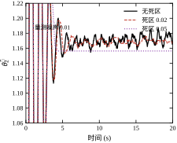
三条判据合起来给一个实用规则：
\text{可信}\iff \Big(\text{激励充分}\Big)\ \wedge\ \Big(\frac{\sigma_\theta}{\|\theta\|}<1\%\Big)\ \wedge\ \Big(\text{10 s 内均值漂移}<1\%\Big) \tag{61-46}
三个条件都满足，才可以把 \theta 拿去算物理参数、做故障诊断、或者写进报表。少一个都不行——特别是第一个，它是最容易被忽略、也最致命的。
反过来说，如果只需要跟踪，根本不必关心这三条。 跟踪性能由 e 直接给出，\theta 只是手段。§61.4.3 里 \gamma=2 的 \hat\theta_2 只有真值的 60%，但跟踪误差照样收敛到零。这个区分在工程上很重要：不要把“控制器工作正常”误读成“参数估得准”。
自适应控制器比固定控制器多了一个“内部状态”——\theta。这个状态会漂、会卷、会失效，所以安全设计要比固定控制器多做三层。
第一层：\theta 的硬限幅。 这一层不参与控制逻辑，只在数值上兜底。本章取 \lvert\theta_i\rvert\le20，是从“\theta_2^* 在 b 变化 \pm90\% 时最大约 14”倒推的。硬限幅的意义不是“限制性能”，而是“保证程序不会算出 inf 或 nan”。实验 9 里，正是这一层把自由自适应的 \theta 拦在了 20 而不是无穷大。
第二层：控制量限幅 + 饱和冻结。 这一层有明确的理论依据（§61.9.3 的“零成本”结论），实现也简单。注意判据要用未限幅的 u_{\text{raw}}。
第三层：看门狗。 监控两个量：\lvert e\rvert 是否长期超过阈值，\theta 是否长期贴在限幅上。任一条件满足超过设定时间（本章建议 2 s），就执行“冻结自适应 + 报警”。冻结时保持最后一份可信快照，而不是当前值——如果当前 \theta 已经贴在限幅上，用它当固定增益会立刻出问题。
三层的关系是递进的：第一层保数值，第二层保稳定，第三层保可诊断。少了任何一层，失效模式就会从“可控降级”变成“不报警的失控”。
自适应最尴尬的时刻是“它坏了，但你不知道”。所以回退必须是设计的一部分，而不是事后补的补丁。
回退的做法是：控制器内部同时维护两份参数——在线学习的 \theta 和冻结的快照 \theta_{\text{safe}}。正常工作用 \theta；看门狗触发后切到 \theta_{\text{safe}}，并停止自适应。\theta_{\text{safe}} 每 10 s 用当前 \theta 覆盖一次，但只在三条可信判据都满足时才覆盖。
这个设计的价值在于：它把“自适应失效”这个不可控事件，转化成了“退化为固定增益控制器”这个可控事件。退化的性能是已知的（就是 §61.8 第 1 步测得的那个性能），不会突然发散，也不会输出荒谬的控制量。
还有一条容易被忽略的回退：上电时的第一秒。此时 \theta=\theta_0，如果 \theta_0=0，控制器几乎不输出，对象可能因为重力、摩擦而移动。工程上通常让 \theta_0 取标定值，或者在起始的 0.5 s 内把自适应增益压到很小，等系统稳定再放开。
把上面的三层边界与回退压成伪代码，整个控制器的核心不到 40 行：
THETA_MAX = 20.0
SNAP_PERIOD = 10.0
def step(t, y, r, ym):
global theta, theta_safe, t_snap, t_bad
phi = np.array([y, r])
e = y - ym
u_raw = float(theta @ phi)
# --- 第一层：数值兜底由 theta 的 clip 保证 ---
sat = abs(u_raw) >= UMAX
u = float(np.clip(u_raw, -UMAX, UMAX))
# --- 第二层：饱和冻结 ---
drive = np.zeros(2) if sat else -GAMMA * e * phi
# --- 第三层：看门狗 ---
bad = abs(e) > E_MAX or np.max(np.abs(theta)) >= 0.99 * THETA_MAX
t_bad = t_bad + TS if bad else 0.0
if t_bad > 2.0: # 连续 2 s 异常 -> 回退
theta = theta_safe.copy()
drive[:] = 0.0
theta = np.clip(theta + drive * TS, -THETA_MAX, THETA_MAX)
# --- 可信时定期刷新快照 ---
if t - t_snap > SNAP_PERIOD and np.std(tail_theta) < 0.01 * np.linalg.norm(theta):
theta_safe = theta.copy()
t_snap = t
return u这段代码里没有一行是“高级技巧”，全部是前面几节结论的直接落地。真正需要设计判断的地方只有三个数值：UMAX（执行器真实限幅）、E_MAX（看门狗阈值，建议取允许的最大跟踪误差）、SNAP_PERIOD（快照周期）。
自适应控制常被问“能不能替代 PID”。答案是分工，不是替代：
一句话：自适应适合“结构清楚、参数会变、变化幅度中等、执行器有余量”的场合。这个条件的每一条都不能少，§61.11 会逐条展开。
本章全部数字来自一个刻意简化的对象：一阶、常值参数、白噪声、一阶执行器。真实设备不会有这么干净的条件。上线之前有四件事必须用现场数据重算，不能照搬。
第一，执行器滞后 \tau_a。 仿真取 0.05 s，伺服阀与液压缸常在 0.05 到 0.2 s 之间，带长管路的还要更慢。测法很简单：给一次小幅阶跃，录下 u 与 y，把 y 的起始段拟合成一阶响应，斜率最大的切线与稳态值的交点就是 \tau_a。这个数直接决定 \gamma 的上界，本章的表 61-10 说明边界就在 100 与 200 之间；\tau_a 翻倍，边界大致往小走一半。用仿真的 0.05 s 去调一台 0.15 s 的设备，等于从一开始就在边界之外。
第二，噪声的幅值与谱形。 实验室的白噪声 0.01 是理想化的。现场噪声往往含 50 Hz 工频串扰、量化台阶和机械振动，幅值可能大一个数量级，而且不是白的——有色噪声在低频段的能量更高，更容易被自适应律当成“参数变化”学进去。正确做法是录一段稳态数据，算出标准差与功率谱，把主频成分先滤波掉，再决定 \Delta。先滤波再加死区，比只加死区有效得多。
第三，实际的一拍延迟。 采样、通信、执行器刷新三者叠加，环路里的等效延迟常常是 2 到 3 拍，而不是 1 拍。§61.5.3 算过，0.02 rad 的相位侵蚀可以忽略，0.2 rad 就吃掉全部裕度。如果控制器与执行器之间隔着总线，这个数要按通信周期算，不能按采样周期算。
第四，参数的变化范围。 这决定了 \theta^* 的活动范围，进而决定三件事：\theta_0 的标定值、投影边界 \Omega、以及控制量限幅。本章 b 从 1.4 变到 2.1（+50%），\theta_2^* 从 1.43 降到 0.95；如果工况会让 b 掉到 0.7（−50%），\theta_2^* 就要涨到 2.86，峰值控制量跟着翻倍——这时候限幅 3 就不够用了。
把这四件事写成一张对照表贴在调试现场，比任何“调参口诀”都实用：仿真里的每一个数字，在现场都有一个对应物，而它们几乎从不相等。
下面的过程来自本章实验 9 的第二行——限幅 2、指令幅值 5、自由自适应、\gamma=20——但按现场的顺序讲一遍，因为事故的价值不在数据，在排查的次序。
现象。 一台流量回路，正常工况设定值在 0.8 到 1.2 之间，调试期间表现良好。某天工艺要求把设定值一次性拉到 5.0。阶跃之后的前两秒，输出跟得还算像样，之后开始“发木”：设定值加到 5，实际只到 2.8，怎么等都不再上升。操作员把设定值退回 1.0，输出反而冲过头到 1.6 左右，然后慢慢往下蹭。同一套控制器，小信号还行，大信号就坏，退回小信号也不恢复——这三条合在一起，基本可以排除“增益调得不对”这种解释。
录波。 调出三张曲线，横轴都是阶跃后的时间。
第一张是控制量 u。它在阶跃后约 0.1 s 内顶到限幅 2.0，然后一动不动地贴了 3.1 s，直到误差缩小才松开。
第二张是 \hat\theta 的两个分量。这是关键：饱和的那 3.1 s 里，两个分量同向、单调、几乎等速地往上爬，从初值一路爬到硬限幅 20，之后被 THETA_MAX 卡住不动。终值是 (+20.000,+20.000)。
第三张是误差 e=y-y_m。饱和期间它恒为负，幅值 2.2 左右——因为参考模型按 0.5 s 时间常数冲到 5，对象却只能到 2.8，这个差是执行器给不出来造成的，不是参数不对造成的。
定位。 三条线索指向同一个结论。
先排除噪声：噪声只会让 \theta 抖，不会让它单调爬升 3 s。再排除对象变化：如果是 b 真的掉了，\theta_2 应当往大调、\theta_1 往负调，两个分量的方向应当相反（表 61-5 里 \gamma=100 的收敛轨迹就是这种“一正一负”）；而录波里两个分量同号同上，说明误差在把两个参数往同一个方向推，这只可能发生在回归向量 \phi=(y,r) 两个分量同号的时候，也就是大指令段。
真正的机理是 §61.9.3 讲的那条：饱和期间 u 被卡死，误差里混进了一个与控制能力有关的常量（这里是 -2.2），自适应律把这个常量当成“参数还差得远”，于是以 \gamma\cdot2.2\cdot\|\phi\| 的速率继续积分。3.1 s 之后饱和解除，\theta 已经跑到 20 附近，闭环增益被彻底带偏——这就是“退回小信号也不恢复”的原因：参数没有自恢复能力。
用实验 9 复现，数字完全对上：末端 y=2.800、e=-2.200、\hat\theta=(+20.000,+20.000)、\|\theta\|_{\max}=28.28、IAE 22.402。同一条件下打开饱和冻结，末端输出与 IAE 一模一样，只有 \hat\theta 停在 (+0.002,+0.465)、\|\theta\|_{\max} 降到 0.46。跟踪性能没有损失一个数字，漂移被完全消掉。
补丁。 按代价从低到高排：
复盘。 有四条可以带走。
第一，大阶跃必须单独测。调试时的阶跃都是 0.2、0.5 这种小幅，永远不会触发饱和；而现场的操作员不会按调试大纲动作。测试用例里至少要有一条“指令从最小拉到最大”。
第二，饱和判据是最容易写错的地方，写错了不会报错，只会让控制器在大信号下悄悄退化。上线前要专门做一次“强制饱和”测试：临时把限幅压到 0.5，看 \theta 是否停止更新。
第三，\lvert\theta_i\rvert\le20 这道硬限幅救了这次事故。没有它，\theta 会在这 3.1 s 里爬到几百甚至更大，退回小信号后闭环会直接发散，而不是“冲过头 0.6 再慢慢蹭回来”。§61.2.10 说过这道限幅是让定理成立的前提，这里再补一句：它同时也是让事故停留在“性能下降”而不是“设备飞车”的那道闸。
第四，事故后的第一个动作是回退到 \theta_0 并复现，不是继续调 \gamma。参数被带偏之后，任何基于当前状态的调参都是在错误的基础上叠加——这也是 §61.10.4 把“回退”列为独立一节的原因。
一、参数大范围变化时仍能保持性能。 这是自适应唯一不可替代的能力。本章 b 变化 50% 时，跟踪误差峰值只有 0.051、0.83 s 恢复（§61.6.5）；作为对照，固定 PI 在方波工况下的 rms 误差是自适应版本的 2.1 倍（0.1605 对 0.0752）。如果工况变化达到 2 倍、3 倍，固定增益要么按最坏情况调得很慢，要么在最好情况下过冲，两者都不可接受。
二、跟踪性能可以“指定”。 参考模型是设计者写的，不是对象决定的。想要 0.5 s 的时间常数就写 a_m=2，想要 1 s 就写 a_m=1，只要执行器撑得住。这个自由度是 PID 没有的——PID 的闭环动态由对象和增益共同决定，想改动态就得重新调参。
三、对常值扰动自带积分作用。 式 (61-10) 里 d 与 \theta_2r 同构，自适应会把它吸收进参数。实验 7 里 \sigma=0、d=0.3 时稳态误差精确为 0.0000，而控制器里并没有显式的积分器。
四、控制器结构固定，参数在线变。 这意味着代码量不随工况变化，测试用例可以覆盖，认证路径清楚——这在功能安全要求高的场合（汽车、医疗、航空）比“根据工况切换控制器”的方案好审得多。
一、稳定性边界靠扫，不靠算。 式 (61-33) 给出的解析上界只考虑离散化，真实边界由执行器滞后与噪声决定，两者都要求实测。本章实测硬边界在 100 与 200 之间，可用值 50；换一台设备就要重扫一遍。这使自适应的调试成本显著高于 PID。
二、控制量抖动。 为换取精度，TV 从 0.7 涨到 19.9（\gamma 从“参数已知”到 100），方波工况下是固定 PI 的 1.79 倍。抖动会被执行器、传动链、结构放大成噪声与磨损。对静音要求高的场合（家电、办公设备），这一点往往一票否决。
三、参数不可解释。 §61.4.3 与 §61.10.2 反复说明：分量不可信，只有组合可信。这让自适应无法直接用于故障诊断或前馈补偿，除非额外做 STR 或复合自适应。
四、对非参数化不确定性无能为力。 纯延迟、谐振、死区、滞环，这些都不是“参数不对”，而是“结构不对”。本章的 0.05 s 执行器滞后已经把 \gamma 的可用值压掉一半；如果滞后是 0.2 s，边界会压到个位数，自适应基本失去意义。
五、失效不报警。 \theta 贴在限幅上时，输出可能还“看起来正常”，但控制器已经退化。这是 §61.10.3 三层安全边界存在的理由，也是自适应在关键场合推广缓慢的主要原因。
把优缺点折成五个可以逐条核对的条件（表 61-17）。五条全满足才建议用自适应，缺一条就该考虑别的方案。
| 条件 | 判据 | 不满足时改用 |
|---|---|---|
| 结构清楚 | 阶次、控制方向、非线性形状已知 | 滑模（第 59 章）或鲁棒控制 |
| 参数会变且变化大 | 变化幅度 > 30% | PID + 增益调度（第 44/106 章） |
| 变化可被误差看见 | 参数变化会体现在跟踪误差上 | 前馈补偿或扰动观测器 |
| 有足够执行器余量 | 峰值控制量不超过限幅的 50% | MPC（第 58/80 章） |
| 采样与算力够 | T_s 内能完成一次更新 | 降采样或改查表 |
第一条“结构清楚”是最硬的。本章全部推导都建立在式 (61-1) 成立的基础上；如果对象的阶次都不确定，Lyapunov 函数根本写不出来。这种情况下滑模更合适——它不要求结构，只要求不确定性有界。
第三条容易被忽略。“参数变化可被误差看见”意味着参数必须影响跟踪。如果某个参数只影响执行器的内部状态、不影响输出，那么无论它怎么变，误差都看不见它，自适应也就学不到它。看不见的东西不能自适应，只能测。
图 61-11 把上面五个条件画成一张流程图。从“模型结构是否已知”开始，逐层判断，最后落到具体方法。
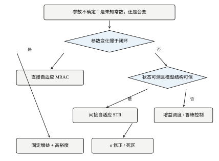
流程里有三个分叉值得记住：
表 61-18 把本章方法与几个相邻方法放在一起，只列结构性差异，不排优劣。
| 维度 | MRAC | 固定 PID | 增益调度 | MPC | 滑模 |
|---|---|---|---|---|---|
| 需要模型 | 结构 + 控制方向 | 不需要 | 需要调度变量 | 完整模型 | 只需不确定性界 |
| 参数变化适应 | 主动、在线 | 被动、靠裕度 | 主动、离线 | 主动、在线 | 靠切换增益 |
| 约束处理 | 只能冻结 | 抗饱和 | 同 PID | 显式 | 靠增益 |
| 控制量平滑度 | 中（有抖动） | 高 | 高 | 高 | 低（抖振） |
| 调试成本 | 高（要扫边界） | 低 | 中 | 高 | 中 |
| 可解释性 | 差 | 好 | 好 | 好 | 中 |
这张表最容易被误读成“MRAC 全面劣势”。不是的：在“参数大范围变化 + 结构清楚 + 执行器有余量”这个交叉条件下，MRAC 是唯一能同时给出性能保证与实现简单性的方案。 表格里那些“高成本”的项，正是它为这个能力付出的代价。
自适应上线之后，最常见的错误不是“参数没调好”，而是“用错了地方还硬撑”。四条退回判据，任何一条成立就该退：
一、参数变化幅度不到 30%。 固定增益按最坏工况整定，性能损失有限；而自适应的调试成本、抖动代价、失效风险都是实打实的。本章的方波对比里，MRAC 的 rms 误差是 PI 的 47%，但峰值误差是 141%、TV 是 179%——当工况变化不大时，这笔账算不过来。
二、稳定边界低于可用窗口。 按 §61.6.9 的经验式，\gamma_{\max}\approx(5\sim10)/\tau_a。若 \tau_a=0.2 s，上界只有 25 到 50；再考虑噪声把可用值打到 1/3，就只剩 10 左右，学习速率低到与“固定增益慢调”没有区别。学不动的时候，自适应只是一个更吵的 PID。
三、结构或控制方向不可靠。 §61.1.5 与 §61.2.9 都说明：结构错了、符号错了，\gamma 调什么都救不回来。这类场合的替代品是滑模（只要求不确定性有界）或鲁棒控制（只要求界已知）。
四、可解释性与认证要求压倒性能。 功能安全评审要看“最坏情况下控制器输出是多少”。自适应控制的最坏情况取决于 \theta 的边界，而不是几个固定增益，论证成本高一个量级。很多项目最终选择“固定增益 + 增益调度”，不是因为性能更好，而是因为能写进安全论证。
退回的方式也有讲究，不要硬切：
第一，自适应控制买的是“参数变化时的性能一致性”，付的是“控制量抖动与调试成本”。 本章的量化版本：rms 误差降 53%、峰值误差升 41%、TV 升 79%（§61.6.6）。这笔交易只在参数变化大、且抖动可以接受时才划算。
第二，稳定性边界必须实测，不能推算。 理想执行器下 \gamma=100 可用，0.05 s 滞后下 50 就是上限（§61.6.3）。凡是“算出来能用”的结论，都要用真实执行器复核一遍。
第三，误差收敛不等于参数收敛。 这是本章最容易被忽略、也最容易被误用的一条。控制做好了是本事，把 \theta 当参数用是事故。
本章的仿真只有两个文件：
book/code/ch061_sim.py 仿真主体：对象、三个控制器、十四组实验
book/code/ch061_figs.py 十一张插图，全部从 ch061_sim 的结果重算时域指标（超调、调节时间、稳态值）一律调用 simlib.step_metrics，与全书其他章同一口径；本章另外补充了 IAE、尾段 rms、控制量总变差 TV、\theta 终值四个指标，写在 metrics() 里。这样做的目的是保证正文里出现的每个数字都能由一条命令复现，不需要手工抄录。
运行方式：
D:\Anaconda3\envs\py311\python.exe code/ch061_sim.py
D:\Anaconda3\envs\py311\python.exe code/ch061_figs.py对象是一阶 ODE，用定步长 RK4 每拍积分一次。执行器滞后作为可选的一阶环节并入同一个右端项，这样“理想执行器”与“带滞后执行器”共用一套代码，切换只改一个参数：
def plant_rhs(y, ua, u, dist, b=B_PLANT, tau_a=0.0):
"""对象与执行器右端项；tau_a=0 表示执行器理想。"""
dy = -A_PLANT * y + b * ua + dist
dua = 0.0 if tau_a <= 0 else (u - ua) / tau_a
return dy, dua这里的 ua 是真正作用到对象上的控制量，而 u 是控制器算出来的量。两者的差就是 §61.6.3 那个让 \gamma 边界塌掉的滞后。实验 6 里把 tau_a 设成 0.05，同一套代码就能把稳定边界从 100 以上压到 50 附近。
b 也做成了参数，并且在参数突变实验里传的是一个可调用量 b_fn(t)，这样 t=5 s 的跳变可以在一次仿真里完成，不需要“跑一半、换个控制器接着跑”——后者会让 \theta 的状态丢失。
MRAC 类把本章讨论的全部机制（Lyapunov 律 / MIT 律、\sigma 修正、死区、饱和冻结、限幅）压在一个 step() 里，靠构造参数开关：
class MRAC:
def __init__(self, gamma=10.0, theta0=(0.0, 0.0), mode="lyap",
sigma=0.0, dead=0.0, umax=None, freeze=False):
...
def step(self, t, y, r, ym, ts=TS):
e = y - ym
# MIT 律的灵敏度信号：ef_dot = -am*ef + bm*e
self.ef += (-AM * self.ef + BM * e) * ts
phi = np.array([y, r], float)
u_raw = float(self.theta @ phi)
sat = self.umax is not None and abs(u_raw) >= self.umax
if self.mode == "lyap":
drive = -self.gamma * e * phi
else:
drive = -self.gamma * self.ef * phi
if self.dead and abs(e) <= self.dead:
drive[:] = 0.0
if self.freeze and sat:
drive[:] = 0.0
if self.sigma:
drive -= self.sigma * (self.theta - self.theta0)
self.theta = np.clip(self.theta + drive * ts, -THETA_MAX, THETA_MAX)
u = float(self.theta @ phi)
return u if self.umax is None else float(np.clip(u, -self.umax, self.umax))几个实现细节值得单独说明，它们都对应正文里的一个结论：
u_raw 与 u 分开。饱和判据必须用未限幅的 u_raw，否则永远判不出饱和（§61.9.3）。这是本章代码里最容易写错的一行。np.clip 的硬限幅放在更新之后。放之前会让判断逻辑变得复杂，且不能防止单步跳变越界。放在之后，theta 的任何时刻都在 [-20,20] 内，inf/nan 无从产生。theta @ phi 仍可能因为 \phi 大而超出 umax。ef 无条件更新。即使当前用的是 Lyapunov 律，ef 也照算——它只多花一次乘加，换来的是“切换 mode 不需要重置状态”，便于对比实验。STR 类走的是另一条路：先用上一拍的数据做一次 RLS 更新，再用更新后的参数算控制量。
def step(self, t, y, r, ym=None, ts=TS):
if self.y_prev is not None:
phi = np.array([self.y_prev, self.u_prev], float)
eps = y - float(self.theta @ phi)
Pphi = self.P @ phi
den = self.lam + float(phi @ Pphi)
self.P = (self.P - np.outer(Pphi, Pphi) / den) / self.lam
self.theta = self.theta + Pphi / den * eps
self.theta[0] = np.clip(self.theta[0], 0.5, 1.2)
self.theta[1] = np.clip(self.theta[1], self.bmin, 1.0)
a_hat, b_hat = float(self.theta[0]), float(self.theta[1])
u = ((self.am_d - a_hat) * y + (1.0 - self.am_d) * r) / b_hat
self.y_prev, self.u_prev = y, u
return float(u)两处工程保护必须保留：theta[0] 被夹在 [0.5,1.2]（一阶对象的极点必须在单位圆内且为正），theta[1] 被夹在 [b_{\min},1]。bmin=0.002 的取值在 §61.5.2 讨论过——它防的不是辨识精度，而是除零。
reference() 支持四种指令：阶跃、方波、斜坡、PRBS。前三种用于跟踪实验，PRBS 专用于给 STR 提供激励：
PRBS_PATTERN = (1.0, 0.6, -1.0, -0.6, 0.6, 1.0, -0.6, -1.0)
def reference(t, kind="step", amp=1.0, period=6.0):
if kind == "step": return amp
if kind == "square": return amp if (t % period) < period / 2 else -amp
if kind == "ramp": return amp * min(t, 5.0)
if kind == "prbs": return amp * PRBS_PATTERN[int(t) % len(PRBS_PATTERN)]这个八位序列只含四个电平，但相邻两拍的方向组合足够多，足以让 \{y[k-1],u[k-1]\} 扫开一个二维区域。§61.5.5 的实测证明这已经够用：\lambda\le0.98 时 \hat b_d 精确收敛到 0.0209。如果换成方波（只有两个电平），回归矩阵共线，\hat b_d 会一直贴着初值不动——这也是本章最初踩过的坑。
metrics() 在 step_metrics 之上补了四项：
m["iae"] = float(np.trapezoid(np.abs(e), t)) # 累计绝对误差
m["rms_e_tail"] = float(np.sqrt(np.mean(e[-tail_n:] ** 2)))
m["umax_abs"] = float(np.max(np.abs(u))) # 控制量峰值
m["tv_u"] = float(np.sum(np.abs(np.diff(u)))) # 控制量总变差
m["theta_end"] = th[-1].copy()
m["theta_err"] = float(np.linalg.norm(th[-1] - np.array([THETA1_STAR, THETA2_STAR])))TV 的定义是相邻两拍控制量差的绝对值之和，它度量“控制量一共走了多少路”，是抖动最直接的量化。正文里“TV 从 0.7 涨到 19.9”这类说法全部由这一行算出。
theta_err 是到真值的欧氏距离，§61.4.3 与 §61.6.2 用它说明“分量不准”这件事；它与“和”这个指标配合使用——和准、距离大，正是“只能辨识组合”的证据。
ch061_figs.py 里十一张图全部由 ch061_sim 重算，没有硬编码坐标。数据图用 plot_styles 的 SINGLE/DOUBLE 尺寸，框图用 block_styles 的语义助手：
canvas+block+sum_node 画，输出前统一调用 export(fig, stem)，同时落 SVG 与 PDF。$...$，两者不写进同一个字符串——这条规矩来自 §61 任务卡的“图内中西文不混排”要求，目的是避免字体回退造成的方框。按下面的顺序跑一遍，正文里的每个数字都能对上：
ch061_sim.py：main() 里十七个实验函数（正文按叙述需要编为实验 1 到 15，其中含 10b 这类分支），覆盖 §61.1 到 §61.11 的全部引用数据。输出按实验编号分组，每行一个工况。ch061_figs.py：读同一套函数重新计算，生成十一张图到 figs/ch061/。tools/check_chapter.py 61：检查章节结构与图数。tools/build.py --chapter 61：生成 PDF。如果只关心某一个结论，可以单独导入：
import ch061_sim as s
res = s.simulate(s.MRAC(gamma=20.0), T=10)
print(s.metrics(res)["theta_end"]) # [-0.567 1.281]，和 0.715这条命令对应 §61.4.3 表 61-5 的第二行。把它换成 gamma=2.0，会得到 (-0.142,+0.860)，和 0.718——两个分量差很多，和却几乎一样。这一行输出就是整章论点的最小复现。
正文里有五张小表来自“辅助实验”，它们不涉及新算法，只是把已有函数换个参数扫一遍，代码都在 ch061_sim.py 里，函数名以 exp_ 开头。
实验 11（§61.5.3 的采样周期扫描） 是纯解析计算，只用到式 (61-26) 与式 (61-30)，不跑闭环：
for ts in (0.001, 0.005, 0.01, 0.02, 0.05, 0.1):
ad = np.exp(-A_PLANT * ts)
bd = B_PLANT / A_PLANT * (1 - np.exp(-A_PLANT * ts))
th = np.array([(np.exp(-AM * ts) - ad) / bd, (1 - np.exp(-AM * ts)) / bd])把 th 与 [THETA1_STAR, THETA2_STAR] 做差再取范数，就是正文里“偏离 0.63%”那一列。步长上界的估计用 norm(theta)/PHI_TYP/ts，其中 PHI_TYP=1.4 是回归向量的典型范数。
实验 12（§61.7.5 的 \gamma\times\Delta 二维表） 是十次独立的闭环仿真，除了 gamma 与 dead 之外全部参数固定（T=20、noise=0.01、seed=7）。随机种子必须固定，否则标准差那一列会逐次跳动，没法跨行比较。
同一函数里还算了一个诊断量：idx = np.where(np.abs(e) > d)[0]，取 idx[-1] 就是“误差最后一次超过死区”的时刻。这个时刻解释了两列数字的关系：\gamma 越大，冻结发生得越早、冻结时的参数越准，于是死区的静差反而越小。
实验 13（§61.4.7 的前七拍） 只需要把仿真时长设成 0.08 s，然后逐拍打印：
res = simulate(MRAC(gamma=20.0, theta0=(0.0, 0.0)), T=0.08)
for k in range(1, 8):
print(res["t"][k], res["ym"][k], res["y"][k], res["theta"][k], res["u"][k])注意 ym 是在每拍末更新的，所以打印出来的 e=y-ym 与“控制器当拍看到的 e”差一拍。正文里已经说明这一点，读表时不要把 k=0 的 -0.02 当成控制器看到的误差。
实验 14（§61.5.7 的协方差迹） 用一个包装函数把 tr(P) 记下来，因为 STR 本身不存这个量：
ctrl = STR(lam=lam)
orig = ctrl.step
def step(t, y, r, ym=None, ts=TS):
u = orig(t, y, r, ym, ts)
trace.append(np.trace(ctrl.P))
return u
ctrl.step = step这种“临时挂钩”写法在仿真里很实用：不用为了记录一个中间量去改控制器类，也就不会因为改动而影响已经发表过的数字。
实验 15（§61.6.10 的斜坡扰动） 需要把 simulate() 的 dist 从常数改成可调用量，否则“随时间线性增长”根本表达不出来：
dt = dist(t) if callable(dist) else dist # 扰动可以是常数，也可以是 t 的函数
bt = b(t) if callable(b) else b # 增益同理，供参数突变实验用两行都写成同一个模式。仿真的接口要为“时变”留一个口子，否则每加一个时变工况就要复制一遍主循环，而复制出来的循环最容易与主循环悄悄分叉——本章早期版本就出现过一次：临时脚本里手写循环又多调用了一次 rk4_step，ua 被覆盖，斜坡扰动的效果完全消失。把时变量收进 simulate() 之后，这类错误就无处可藏。
还有一处口径要留意：这个实验报的是 20 s 末的误差，不是全程 rms。|e_{ss}|\approx0.36s/\gamma 是稳态估计，前 5 s 的暂态误差主要由初始参数误差决定、与 s 基本无关，混在一起算 rms 会把两种机理搅在一起。
这五个函数都挂在 main() 末尾，跑一次 ch061_sim.py 就全部输出，不需要额外命令。
这套代码不长，但有三个地方会让“照抄一遍却对不上数”。
第一，np.where 取最后一个索引会空。 实验 12 里用 idx = np.where(np.abs(e) > d)[0]、再取 idx[-1] 求“误差最后一次超出死区的时刻”。如果某组参数下误差从头到尾都在死区内（\gamma 小、\Delta 大时完全可能），idx 是空数组，idx[-1] 直接抛 IndexError。正确写法是先判空：
idx = np.where(np.abs(e) > d)[0]
k = int(idx[-1]) if len(idx) else 0这类“扫描实验里个别工况越界”的错误很难靠读代码发现，因为默认参数那一行跑得很顺。扫参数空间时，先假设每个分支都会遇到空集。
第二，理想执行器时 ua 会停在 0。 对象积分的是 ua（执行器输出），而 ua 只在 tau_a > 0 时由 dua = (u - ua)/tau_a 推动。tau_a = 0 表示执行器理想，此时若不做特殊处理，dua = 0，ua 永远是初值 0——控制器算得再对，对象收到的控制量始终是零。本章的写法是加一行短路：
if tau_a <= 0:
ua = u # 执行器理想：直接跟随这个坑的可怕之处在于它的表现：y 恒为 0、e 恒为 -y_m、\theta 被一路推向限幅，看上去“自适应完全失效”。如果不知道这一行，会去怀疑增益、怀疑符号、怀疑参考模型，而真正的原因是对象根本没接上控制量。
第三，随机数不能在多次仿真之间共用。 本章每个 simulate() 内部按传进来的 seed 新建 default_rng，而不是用一个模块级的全局 RNG。理由是可比性：如果全局共用一个 RNG，那么在 main() 里多加一个实验，后面所有实验抽到的噪声序列都会变，正文里已有的表格和曲线会集体失配，而且没有任何报错提示。本章在第二轮扩写时新增了五个 exp_ 函数，正是靠“每次仿真重建 RNG”才保证了旧数字一个都没动。
同样的道理适用于参数：凡是会在正文里被引用的量，都应当能从函数签名直接看出来（gamma、dead、noise、seed、T），而不是藏在函数体里的常量。复现性不是“我记得当时是怎么跑的”，是“读签名就知道当时是怎么跑的”。